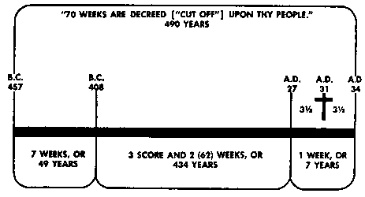
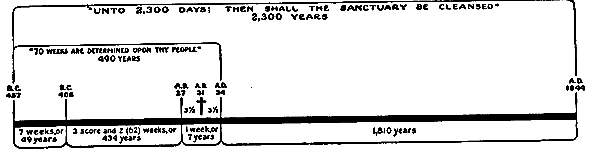

Last Things
We come now to the task of sketching Mrs. White's doctrine of eschatology (the last things). Thus far we have covered epistemology (Bible), theology (God), anthropology (man), Christology (Christ), soteriology (salvation) and ecclesiology (church). If the reader has some knowledge of historical theology, he may have been surprised to find how well Mrs. White's doctrine on those points falls within the mainstream of conservative Christianity—especially how closely it follows the old-time Protestantism of Luther, Calvin and Wesley. If we have touched on any heterodox aspects so far, they are on relatively minor points. We must remember that even the great Reformers could not agree on everything.
There are, however, real problem areas in Mrs. White's doctrine as far as most evangelical Christians are concerned. It is significant that all these theological bugbears arise in the area of eschatology and exist because of Mrs. White's concept of the last things. If we had ended this outline with the preceding chapter, many would have been left asking, "Where are all the heterodox doctrines?" The answer is that they are all in the last chapter—eschatology.
Mrs. White's concept of eschatology gives rise to a whole cluster of heterodox positions, such as the investigative judgment, the intermediate state, the Sabbath, the Babylon/remnant concept, the mark of the beast, the punishment of the wicked, and even that strange looking, appendicle idea of Satan's being the scapegoat.
Our task is neither to defend nor to refute any point. Before we can intelligently reflect on this system of theology, we must first understand what it is. To do this we must first outline it accurately, pointing out where it is either orthodox or heterodox, and being careful for the sake of truth and charity not to distort the author's theology, but to present it (as we would like our own to be presented) in its truest and most defensible light. Moreover, need we point out that if anyone is not willing to go to the trouble of accurately understanding the author's positions, neither should he want to go to the trouble of criticizing them.
Understanding the Development of Eschatology
We believe that Dr. Pentecost (The Shape of Things to Come) is right when he points out that a detailed study on eschatology and the growth of a cohesive system of eschatology are very late developments in the history of theology. Before the nineteenth century most Christians could have written all they knew about the last things on the back of a postage stamp. Until recently eschatology was not where the action was.(1)
In the first five centuries much of the action was in the area of developing a mature Christology. But by the time of Chalcedon the issues had been pretty well settled. There was now such a thing as an orthodox Christology. About the same time, the Pelagian controversy was forcing the church to a more mature understanding of sin (hamartiology).
For many centuries the church had no teaching which clearly spelled out the doctrine of atonement. why did Christ really have to die? what is the meaning of ransom, etc.? Anselm led the way in setting out a systematic doctrine of the atonement, and the Reformers rounded it out.
Until the sixteenth century the church did not have any maturely stated system of soteriology. It cannot be found in the Fathers. It cannot be found in Augustine. That system was hammered out in the Reformation period. Today the basic distinction and relationship between justification and sanctification is often taken for granted. We are able to think in systematic categories that were undeveloped before the Reformation. It should be remembered that the edifice of truth has been in construction over the ages as God has moved upon human agents to be builders in His temple. We all build on the foundations of many generations, entering into the benefits of other men's labors. He who ignores these things is either colossally ignorant or down-right egotistical. Hoekema (Four Major Cults) is dead right when he castigates the sects for their arrogant notion that they can ignore all this church history and act as if practically no one had the gospel after the passing of the apostles—at least not until they themselves came along with their new-fangled "gospels." All such deny the reality of Christ's pledge that His Spirit would be with the church and would lead her throughout the whole span of time.
Returning to our illustration of the temple: We have seen the planks going into its construction—the doctrines of the three Persons of the Godhead, the deity of Christ, His two natures, the substitutionary atonement, penal satisfaction, justification by a righteousness outside of man, and sanctification by the Spirit. But the structure still needs a roof; our theological heritage needs a final chapter. That roof, that final chapter, is eschatology.
Before the nineteenth century, eschatology was very embryonic—just as Christology in the time of the early church fathers or soteriology before the Reformation was embryonic. Heretofore the church had gotten along without a developed eschatology. The time came, however, when many began to reflect on the last things as never before. They felt that the church's heritage in this area was inadequate, and they saw the need to forge ahead and plow some new ground.
In the resulting eschatological (Advent) ferment of the early 1800's, two movements began to take shape. The amount of study given to the great lines of Bible prophecy was amazing. Of course, there were the inevitable fanatics and wild-eyed enthusiasts who clambered aboard the agitation. There was also immaturity, even some misdirected zeal in the expectation of the arrival of the end time. Yet we should not be too ready to fault some of these path finding eschatologists.
The average evangelical who thinks he gets his scheme of eschatology from his own study of the Bible is just as naive as the Christian who imagines he obtains his nicely stated view of Christ's two natures directly from his own biblical research. To confirm a system by private study and to actually dig it out are two vastly different matters. If we are going to understand what modern eschatology is all about, we will need to know something about its origins. Too many evangelicals act like Australians who do not like to ask too many questions about their family tree—for Australia was founded by English convicts sent out to serve time among the Aborigines.
One of these two great eschatological ferments took place in England. There were flaming preachers like Irving (a good man, but mistaken on some points), and indefatigable students like Darby, Newton and Tregelles—all diligently working to hammer out a system of eschatology. There were fights and a lot of religious rough and tumble—including quite a few casualties in the battle—but out of it all an eschatological system took shape.
On the other side of the Atlantic, New England felt the first stirrings of an Advent awakening. William Miller, a Baptist farmer from upstate New York, began to create a stir with his charts, time prophecies, and appeals to get ready to meet the Lord. It was not long before he had 300 clergymen backing him. While prophetic conferences such as Powercourt were in full swing in England, these Americans called their own prophetic conferences. Chronology, history, biblical symbols—all came in for a tremendous amount of investigation. That there was immaturity is self-evident. So is the fact that, with some, enthusiasm got out of hand. There were fierce tussles, disappointments and many casualties; but just as surely as in England, an eschatological system was beginning to take shape.
Out of these two ferments—one in Europe and the other in America—two eschatological systems finally developed. It can be safely said that within the whole Christian movement (that is, among those who accept the fundamental verities, such as the three Persons of the Godhead, the deity of Christ, the blood atonement, justification and sanctification, etc.), there are only two developed eschatological systems.
These two eschatological movements had a number of things in common. (To realize this might help some remember that it is not always safe to poke fun at the other fellow's ancestors!)
| 1. Both movements—British and American—were second advent oriented.
2. Both were premillenial—a reaction against the sterile post-millennialism of the day.
3. Both movements were rather anti-establishment, and
4. Both were separatist ("Come out of her," etc.).
5. Both movements were doing some date setting for the end of the world, and
6. Both delivered the message "Behold the Bridegroom cometh" with all its apocalyptic overtones.
7. Both witnessed some charismatic activity, and
8. Both saw conflict over whether to accept a revival of "spiritual gifts" in the last days. |
It took a number of years for the outlines of an eschatological system to develop in either movement. Before we compare the main points in these systems, one other interesting fact needs to be noted. The American Advent movement (which finally spawned the Seventh-day Adventists) was largely discredited in America. Therefore it grew up (much like Pentecostalism) outside the fold of the churches considered "evangelical." But the eschatology of the British movement, known generally as "pre-millenialism" or "dispensational pre-millenialism," made its way to America and has today practically taken over the entire church. A few Lutherans and Reformed are content to sit on the sidelines, but they have not been able to make any dent in this eschatological scene simply because they cannot get their heads out of Luther and Calvin long enough to make any real contribution to eschatology.
However much the dispensational evangelicals and the Seventh-day Adventists may square off against each other, there are some striking parallels in their respective systems of eschatology. Let us compare them by working backwards from the last judgment.
1. Both believe that the new earth will be the eternal home of the saved.
2. Both believe in a second resurrection of the wicked and a final judgment at the end of the millennium.
3. Both believe in a real thousand year millennium.
4. Both believe in the literal second advent of Jesus to the earth prior to the beginning of the millennium.
5. Both believe that the second advent of Christ will be preceded by a short period of catastrophic stress and persecution.
6. Both believe that there will be some sort of separation of the righteous and wicked just before this great trouble.
7. Both believe that the judgment of (for) the church will take place before God's throne prior to the second advent. |
Interesting? Some of our readers may even say, "Hey, why don't the premillenial evangelicals and the Adventists get together instead of opposing each other's eschatology?"
Now let us look at the differences in these eschatological schemes:
Dispensationalist Scheme(2)
|
Adventist Scheme
|
Final Disposition of the Wicked
God's plan means that after the final judgment the righteous will live on this earth in everlasting bliss, while God will torment the wicked in hell fire forever.
|
Final Disposition of the Wicked
God's plan provides for the total eradication of sin and sinners from God's universe. After appropriate punishment sinners will be no more. Eternal punishment means eternal exclusion from the privilege of life.
|
Millennium
The millennium will be on this earth while it is in a flourishing state.
Christ and the Jews will reign over the nations.
Men will still be living on earth in their mortal state.
There will be a second chance given to sinners after the coming of Christ.
|
Millennium
The millennium will be in heaven while this earth lies desolate.
Christ and His saints will judge the world and fallen angels.
The immortal saints will reign with Christ in heaven.
There will be no further opportunity for salvation after Jesus comes.
|
Second Advent
At Christ's second coming He will bring His raptured saints back to this earth.
|
Second Advent
At Christ's second coining He will take all His saints out of this world by resurrecting the righteous dead and translating the righteous living.
|
|
Tribulation Period
Antichrist will make war on the Jews in the coming "tribulation."
The church will not be on earth but in heaven during the great persecution by antichrist. Thus it will be miraculously preserved from the fires of persecution.
A total separation of saints from the wicked will take place before the great tribulation by means of physical removal from the earth.
|
Tribulation Period
Antichrist will make war on the church in the coming "time of trouble."
The church will be on earth and will be the object of antichrist's assault during the time of trouble. But it will be miraculously preserved in the fires of persecution.
A mark of deliverance, or seal, will be placed on the foreheads of the saints before the "time of Jacob's trouble." This is a spiritual separation from the wicked.
|
|
Pre-Advent Judgment
Before the second coming of Christ the church, both dead and living, will be taken up to heaven bodily to be judged in person at the throne of God.
The saints therefore will put on their sinless immortal state and then be judged.
|
Pre-Advent Judgment
Before the second coming of Christ the church, both dead and living, will be judged at God's throne. The saints will be there only in the Person of their Representative, Jesus Christ.
The saints will be judged, and after that, at Christ's appearance, they will put on their sinless immortal state.
|
Each of these schemes of eschatology is built on certain basic theological, soteriological and ecclesiological premises. These differing premises lead to the differing schemes.
Premises of Dispensationalist Scheme(3)
The age of law has been superseded by the age of grace. Law is set off against grace.
Once in grace, always in grace.
Still saved if not sanctified.
The age of the Jew has been superseded by the age of the church.
Prophetic focus is on the Jew in Palestine and rebuilding the temple on Mt. Zion, together with animal sacrifices.
Prophetic scheme is built on the Futurist school of interpretation.
|
Premises of Adventist Scheme
Law and grace both have their function from the beginning to the end of time. Law and grace are in harmony.
In grace only "if you continue in the faith." The necessity of perseverance.
No salvation unless sanctified.
The church is now "the Israel of God." God's people are one body. Christ means no distinction between Jew and Gentile.
Prophetic focus is on Jerusalem above and restoring worship in the temple of heavenly Zion through faith in the once-for-all sacrifice of Jesus Christ.
Prophetic scheme is based on the historical, or the old Protestant, school of interpretation.
|
If we are going to understand the development of these eschatological schemes, we must understand the theological and soteriological premises upon which they are founded. Each scheme is more or less consistent within its own framework. In both, the understanding of the evangel is inseparably tied to the prophetic. There are some, of course, who will accept dispensational or Adventist eschatology without accepting the theological premises upon which it is based. That is possible if they keep their eschatology separate from their understanding of the gospel. But neither a good dispensationalist nor a good Adventist will do that. Eschatology is an extension of one's understanding of the plan of salvation. It is the roof that goes on a theological structure, and its shape is determined by that theological structure.
Adventist Eschatology
With this background sketch, let us return specifically to our task of understanding the eschatology of Mrs. White. She did not hammer out the Adventist scheme of eschatology. Many participated in that, and not all were Seventh-day Adventists by any means. In fact, the American Adventists, being historicists, built on the foundations of many generations—both evangelically and prophetically. For instance, they built on the basic Protestant approach to the law/gospel relationship. They built on the old view that the Christian church was the new Israel of God. They built upon the old Protestant school of prophetic interpretation, retaining such views as the papal antichrist and the year/day principle. Rightly or wrongly, they carried through with premises held for centuries.(4) When it came to fundamental premises, it was their English counterparts who were the great innovators.
Although Mrs. White did not try to write a systematic theology, she did believe in the necessity of having a "system of truth, connected and harmonious."(5) Therefore she saw eschatology as the logical extension of her understanding of the gospel. To miss this point is to utterly fail to understand Mrs. White.
The Three Angel's Messages
The truths which must be given to the world in these last days are represented by the messages of the three angels of Revelation 14.(6) These angels represent the people of God who bear earth's last warning message.7
The angel who begins this eschatological proclamation has "the everlasting gospel."(8) This is not a newfangled gospel, but the gospel given to Adam at the gate of Eden.(9) It was proclaimed by Abraham, David, Isaiah, Jesus, Paul, Luther, Calvin and Wesley. God's people are those who stand by the old paths and build on the foundations of many generations. Their gospel proclamation is not an invention but a retention, not an innovation but a restoration.(10) They must be like Elijah, whose mission was to restore Israel's worship from pagan corruption.11
This everlasting gospel is justification by faith, which was clearly taught by Martin Luther.(12) Justification by faith is earth's last warning message in verity.(13) This is what the angel, or messenger, must bear.(14)
Those who have this everlasting gospel, or justification by faith, are represented as giving a threefold message with distinct utterance(13) ("a loud voice"(16).
(1) They announce that "the hour of His judgment is come" and call upon men to "worship Him that made heaven and earth."
(2) They announce the fall of Babylon.
(3) They warn men against the mark of the beast and point out that the saints are those who "keep the commandments of God, and the faith of Jesus."(17)
Having delivered this message, the messengers prepare a people for the coming of Jesus Christ.(18)
That is the nitty-gritty of this scheme of eschatology. It is not presented as a matter of idle interest in things to come, but as a life and death matter(19) concerning things which have come and are about to come.
But what do these announcements of things like judgment, worshiping God, Babylon's fall, and the mark of the beast have to do with the everlasting gospel? They are viewed as being the eschatological consequences of the gospel. These solemn announcements are the last day implications of justification by faith. (20)
Mrs. White was pained to remark that many in the Advent movement do not understand the three angels' messages. Some who even preach the message (21) do not understand that "justification by faith . . . is the third angel's message in verity." (22) They cannot give the message with distinct utterance because "the loud cry of the third angel" begins "in the revelation of the righteousness of Christ, the sin-pardoning Redeemer. " (23) It is as if a man would announce the ethical implications of Christianity without giving the gospel of Christianity. So those who fail to grasp justification by faith cannot really give the third angel's message, but have "preached the law until [they] are as dry as the hills of Gilboa." (24)
These distinctive tenets of the Adventist message are called "testing truths." (25) The Sabbath, for instance, is called a "test question," "the test," "a testing truth." (26) Dr. Hoekema (Four Major Cults) has failed to understand Mrs. White on this point. He says that she hereby means that salvation is basically decided by a man's relation to a certain day of worship. We share Dr. Hoekema's concern for having salvation determined by relation to Christ by faith. But he has missed Mrs. White's point. Man is saved only by believing the everlasting gospel. Salvation is by grace, on the basis of Christ's righteousness. (27) But God sends tests to prove whether or not men believe in the gospel. (28) Abraham, for instance, was tested by the command to offer up Isaac. This did not make him justified, but proved him justified. The genuineness of his faith was tested. (29) The majority of Gideon's army were sent home, not because they failed to lap the water in their hands, but simply because the way they lapped the water proved whether their hearts were in the cause. (30) So it is with Mrs. White's view of the "testing truths" of the three angels. Being the eschatological implications of justification by faith, they are given to prove whether we really believe in justification by faith. (31)
The First Angel's Message
"And I saw another angel fly in the midst of heaven, having the everlasting gospel to preach unto them that dwell on the earth, and to every nation, and kindred, and tongue, and people, saying with a loud voice, Fear God, and give glory to Him; for the hour of His judgment is come: and worship Him that made heaven, and earth, and the sea, and the fountains of waters." (32)
All Christians believe in some type of eschatological judgment. What is more, it is clear from the New Testament that the preaching of judgment was bound up with preaching the gospel. Paul reasoned of "judgment to come." (33) Mrs. White and the Adventists reason that "the hour of His judgment is come," (34) and believe that it is their bounden duty to declare it.
The Pre-advent Judgment
Evangelical scholars like Martin, Hoekema, Douty, Bird and others find the Adventist doctrine of the "investigative judgment" more objectionable than the Sabbath, the intermediate state or anything else. Our purpose here is neither to defend nor refute, but to understand. In the interests of truth it must be said that some of these men have done an inadequate job of understanding that which is, after all, the only teaching of Adventism which is truly unique.(35) Consequently, their criticism has not been sharp. There is no substitute for hitting the nail right on the head. How can we do that unless we see exactly where the head is?
Adventists believe two things about this judgment:
1. It is seen as a special session of the judgment, involving the church of all ages. This position is not altogether unique. All the pre-millenialists believe that the church will be judged in a different session than the wicked. And many other theologians—Lutheran as well as Reformed—have reasoned that the judgment of the saints will proceed somewhat differently than the judgment of those outside of Christ.
2. It is seen as a pre-advent judgment. Most pre-millenialists take the position that there is some form of pre-advent judgment. Most say that the church is taken to heaven in secret rapture and judged before the great white throne. To the old school of amillenialism, however, the idea of a pre-advent judgment is quite novel.
Let us now examine the rationale behind Mrs. White's view of a pre-advent judgment. It is not within our scope to cite all the scriptures and prophetic interpretations offered as proof, but we can lay out the position and the basic rationale behind it. The reasoning behind the concept of a pre-advent judgment is on four fronts—prophetic, logical, typological and soteriological.
The Prophetic. Adventism is buttressed by extensive prophetic arguments.(36) The Adventist evangelist often begins his public mission with the lines of prophecy in the book of Daniel. Mrs. White did not hammer out the Adventist understanding of these prophetic outlines, but she subscribed to it.(37) Daniel 2, Daniel 7, and Daniel 8 and 9 are basic. Four world empires span the history of the world from 600 B.C. to the end—Babylon, Medo-Persia, Greece and Rome. Daniel 7 fills in the picture that was outlined in Daniel 2. The four kingdoms are followed by the great reign of the little horn (the papal antichrist), then by a description of the judgment scene, when Christ receives His kingdom from the Father, after which the kingdom is given to the saints. The old school Protestant commentators follow this basic outline. But the Adventist expositor draws particular attention to the order at the climax. Following the papal reign of 1260 days (or 1260 years according to the year/day principle, reaching from A.D. 538 to A.D. 1798), the judgment session is seen to convene before the Ancient of Days. After the judgment the antichrist is destroyed (the advent).
Another date is given for the commencement of the judgment hour. By comparing Daniel 7 with Daniel 8 and 9, and using the old Protestant principle of a day for a year, the date 1844 is established. What makes this calculation sure in the Adventist view is the exact way the first portion of the prophecy—the 70 weeks—was fulfilled:  The time of the first advent and of some of the chief events clustering about the Saviour's lifework was made known by the angel Gabriel to Daniel. "Seventy weeks," said the angel, "are determined upon thy people and upon thy holy city, to finish the transgression, and to make an end of sins, and to make reconciliation for iniquity, and to bring in everlasting righteousness, and to seal up the vision and prophecy, and to anoint the most holy." A day in prophecy stands for a year. See Numbers 14:34; Ezekiel 4:6. The seventy weeks, or four hundred and ninety days, represent four hundred and ninety years. A starting point for this period is given: "Know therefore and understand, that from the going forth of the commandment to restore and to build Jerusalem unto Messiah the Prince shall be seven weeks, and threescore and two weeks," sixty-nine weeks, or four hundred and eighty-three years. The commandment to restore and build Jerusalem, as completed by the decree of Artexerxes Longimanus, went into effect in the autumn of 457 B.C. See Ezra 6:14; 7:1, 9. From this time four hundred and eighty-three years extend to the autumn of A.D. 27. According to the prophecy, this period was to reach to the Messiah, the Anointed One. In A.D. 27, Jesus at His baptism received the anointing of the Holy Spirit and soon afterward began His ministry. Then the message was proclaimed, "The time is fulfilled."
Then, said the angel, "He shall confirm the covenant with many for one week [seven years]." For seven years after the Saviour entered on His ministry, the gospel was to be preached especially to the Jews; for three and a half years by Christ Himself, and afterward by the apostles. "In the midst of the week He shall cause the sacrifice and the oblation to cease." In the spring of A.D. 31, Christ, the true Sacrifice, was offered on Calvary. Then the veil of the temple was rent in twain, showing that the sacredness and significance of the sacrificial service had departed. The time had come for the earthly sacrifice and oblation to cease.
The one week—seven years—ended in A.D. 34. Then by the stoning of Stephen the Jews finally sealed their rejection of the gospel; the disciples who were scattered abroad by persecution "went everywhere preaching the word;" and shortly after, Saul the persecutor was converted and became Paul the apostle to the Gentiles.(38)

Since the 70 weeks are "cut off"(39) from the 2300 days, the period must end in 1844.
Revelation 14 shows that the messenger who bears the everlasting gospel just prior to the return of Christ in glory, will announce to the world, "The hour of His judgment is come."(40)
The Logical. It is considered unthinkable that either the wicked or righteous dead should enter their reward at death and then be judged after that at the end of the world. Judgment must necessarily precede reward.(41) When "Christ will come, . . . His reward will be with Him."(42) This indicates a prior, everlasting verdict.
When Christ comes, He will raise the righteous dead and translate from this earth the righteous living.(43) (The wicked dead will not be resurrected until a thousand years later.(44) Prior to His coming, the final judgment must determine who will be raised in the first resurrection and who from among the living will be translated.(45) It is not necessary to consider those outside the "house of God," for they have not even presented themselves as candidates for immortality.(46) But the guests at the marriage (a king's reception of his kingdom is called a marriage according to Oriental custom)(47) must be examined, and those without a "wedding garment" of Christ's righteousness must be cast out.(48) This wedding, or Christ's reception of His kingdom (as in Daniel 7:13,l4),(49) takes place at the end of the gospel age after the gospel invitation has gone out to the highways and hedges of the world. According to the words of Jesus, when He, as the nobleman, goes into a far country and receives His kingdom, then He will return to reward the faithful servants and to punish the unfaithful servants.(50)
Underlying this line of reasoning is the rationale that judgment must precede reward. Why would God consign a man to the bliss of heaven or the fires of hell at death, and then judge him, maybe centuries later? In reply to this some argue, "Don't Adventists know that the Lord knows those who are His? He doesn't need an investigation to find out—certainly not one that takes a period of time." And the Calvinist will add, "He knew them from eternity." But this observation fails to penetrate the Adventists' rationale. They too believe that God needs no investigation to sort His people out. They would even agree that from eternity He knew who would be saved and who would be lost. But they insist that God has an order in His plan of salvation—an order that is demonstrably just and which can be appreciated by all intelligent creatures. Just as the Westminster Confession insists that even those elected from eternity must be brought to faith before actual justification, and just as all evangelicals will insist on some ordo salutis, so the Adventist scheme insists on an eschatological order. The critic therefore needs to direct his criticism to the order, and not fall into the trap of saying that since God knows everything, He does not need any order. If God is particular about correct judicial order at the beginning of the soteriological process, why should He not be just as particular at the end?
The Typological. The types and ceremonies of the Jewish economy are also appealed to by Mrs. White to support the idea of a pre-advent judgment. The line of reasoning is as follows:
1. The judgment session brought to view in Daniel 7 takes place before the throne of God, which is in God's temple, or sanctuary, in heaven.(51) Here Christ appears as the great High Priest and Advocate of His people.(52)
2. Christ's great acts of intercession in heaven are prefigured by the services of the Hebrew tabernacle.(53) How then is the final judgment of God's people prefigured in that earthly ritual?
3. The symbolic ritual had a daily and a yearly service. In the daily service the priest went into the first apartment with blood and incense in what was a continual service of intercession and mediation. This typified one great phase of Christ's work in heaven—that of continual intercession on behalf of His people.
4. The Jewish round of ceremonies climaxed in a yearly service in which the high priest, on the tenth day of the seventh month, entered the most holy apartment of the tabernacle with blood and incense. This brought the ritual to a grand climax, for on this day the sanctuary, the altar and the people were regarded as "cleansed." This was the most solemn day of the year. All were required to afflict their souls at the tabernacle. The unrepentant were "cut off" from Israel, and the faithful were numbered among Jehovah's people. The people waited anxiously for the high priest to come out and bless them. In short, it was a judgment day for Israel. No sinners remained in the congregation of Yahweh. These were "cut off," and the righteous alone remained to face the new civil year.(54)
5. It is argued that Christ will end His great work of intercession in the sanctuary, or temple, in heaven in the same manner. There will be a work of judgment for the Israel of God just before the High Priest returns a second time to bring salvation to those who eagerly wait for Him.(55) As the high priest of old went in to represent Israel on Yom Kippur, so Christ, as in Daniel 7:13, 14, will come to the Ancient of Days to represent His people, or, as in Daniel 8:14) He will come to "cleanse" the sanctuary. Thus the messenger who has the everlasting gospel is commissioned to announce to all the world, "Fear God, and give glory to Him; for the hour of His judgment is come."(56) The man without a "wedding garment" will be "cut off"—have his name blotted out of the book of life.(57) Only those who keep their garments(58) will be accounted worthy of the kingdom and ready to begin the new immortal "year" when the High Priest returns from His temple. (59)
That is a brief sketch of Mrs. White's typological picture. Whatever the critic may think of this typology, he should not take it to what he may think is its logical end and then charge Mrs. White with teaching that logical end. This is a fundamental principle recognized by all responsible critics.
Mrs. White uses the two stage ritual of the ancient tabernacle to illustrate two phases of Christ's work in heaven—His continual intercession and His final intercession. Basically, she does not press the type any further than that, nor does she confine the meaning of the types to that. This should be noted, for in another place she says the tabernacle was a type of the Christian church itself. (60)
Some have concluded that Mrs. White's typological scheme means that she denies the completeness, sufficiency and finality of Christ's work on the cross. Others have concluded that she teaches that sins cannot be fully forgiven until the end time judgment. Both these criticisms are wide of the mark) as the documentation in earlier chapters demonstrates.
Some have also come to the conclusion that Mrs. White must teach that prior to 1844 God's people had limited access to God and could not come into the most holy place of His presence. However, she explicitly taught that Christ's death opened a way into the unveiled presence of God, even into the most holy place.(61) The thoughtful reader may ask, "Does Mrs. White have two faces—an evangelical one and a legal one?" While this may seem correct, it is more accurate to realize that she uses the temple symbolism to teach certain soteriological truths, while on other occasions she uses the same tabernacle to illustrate eschatological points. The temple is simply seen to have more than one lesson. When Mrs. White uses the tabernacle to illustrate eschatological concepts, it must not be concluded that she denies the soteriological truths that the temple may teach.
The Soteriological. Thus far we have reviewed the prophetic, logical and typological reasons given for the investigative judgment concept. The most important, however, is the soteriological argument. We must appeal for the reader's special attention at this point, for it is this which brings us to the real heart of the Adventist system.
Dr. Hoekema levels his most serious criticism of Mrs. White at this point.(62) He says that this doctrine of the investigative judgment constitutes a denial of justification by faith. If, as Luther said, justification by faith is the article upon which everything stands or falls, it could well be that here is the fundamental issue upon which Ellen G. White stands or falls.
We have already reviewed Mrs. White's doctrine of justification by faith. We must now seek to discover how her eschatology is related to her soteriology.
1. Justification itself is a judicial word which means that the repentant sinner has come before the divine court. There, for the sake of Christ in whom the sinner believes, the Judge renders His verdict: "Acquitted! This man stands righteous in My sight and in the sight of My law." (Thus far all good Protestant theology agrees.) But Mrs. White declares that this verdict of justification before the Judge is not final and irrevocable. The believer is not once justified, always justified.(63) He may, by willful apostasy, fall from grace. Like Adam when God created him, he is placed on probation to be tested and tried.(64) He needs to continue in repentance, faith, and utter dependence on the merit of Christ his righteousness.(65) Likewise, Christ must continue to justify him by His continual intercession(66)
This concept of continual justification is not new to Protestantism. Luther, the greatest Protestant of all, taught it. So did Wesley. It is not, as some have concluded, a denial of the finished work of Christ. Christ's work on the cross was indeed finished, but the faith which appropriates Christ's merit is no one time event. As Luther said, God has made everything depend on faith—present continuing faith. This is Mrs. White's doctrine.
Mrs. White sees the investigative judgment as the final and irrevocable decree of the believer's justification.(67) Just as his daily justification is secured by Christ's continual intercession, so his final justification (salvation) is secured by Christ's final intercession.(68) As the Hebrew tabernacle ritual climaxed in a service of final reconciliation at the end of the year, so Christ's continual intercession in heaven will climax in a work of judgment and final justification for the people of God.(69) This final intercession of Christ must precede His coming as King of kings and Lord of lords.(70)
2. This final verdict on the people of God is related to both the law and the gospel. Both these aspects must be considered if we are to under-stand Mrs. White's doctrine of the investigative judgment.
a. Judgment in the Light of the Law. This final judgment of the people of God is according to works. The books of record will be opened, and all will be judged by those things written in the books. "The law of God is the standard by which the characters and the lives of men will be tested in the judgment."(71) "As the books of record are opened in the judgment, the lives of all who have believed on Jesus come in review before God."(72)
The doctrine of a final judgment according to works is quite orthodox. Calvin, Buchanan, Hodge, Strong, Berkouwer and Pieper all subscribe to this doctrine. True, they do not all see it in exactly the same light, but all admit that such a judgment is perfectly biblical. The question that we need to ask here is, What does Mrs. White make of the doctrine of a final judgment according to works?
The answer is quite simple when one understands Mrs. White's doctrine of salvation. While she distinguishes between gospel and law, justification and sanctification, she will never allow for a separation of law from gospel, or of sanctification from justification. A man who accepts the gospel will give evidence of it by a life of obedience to the law.(73) The one who is justified will prove it by living a sanctified life.(74) Sanctification is not optional as far as salvation is concerned. "While good works will not save even one soul, yet it is impossible for even one soul to be saved without good works."(75) The doctrine of a final judgment according to works underlines the absolute necessity of obedience, sanctification and good works in the lives of God's people. This is a needed corrective to any antinomian tendency. Let no man presume on grace. "There is truth in Jesus that is terrible to the ease-loving, do-nothing ones."(76) Let there be heart searching, therefore, among all who profess the name of Christ. Let the careless and indifferent be warned that the "books of record" will prove whether or not their faith is genuine.(77)
Lutheran scholar Adolf Koberle follows the same line of thought:
All must appear before the judgment seat of Christ to receive the final judgment on this earthly life. Whoever in the earthly congregation continues to serve evil shall not inherit the Kingdom. . . . when the idea of the judgment on the entire attitude of the one who is justified has been maintained, there will be no room for the ancient antinomianism misunderstanding which has always accompanied Paulinism and Lutheranism like a dark shadow. . . . If even the justified sinner must face the judgment it is no longer a matter of indifference as to the degree in which he has allowed himself to be purified by the Spirit from the "defilement and evil of the flesh. (78)
b. Judgment in the Light of the Gospel. If we stopped at Mrs. White's doctrine of a judgment according to works, we would only be considering one side of her doctrine. This is what some of her critics have obviously done, concluding that she believes that the believer's final salvation is grounded on works. We have to be fair, however, and say that this is not what Mrs. White teaches. While she insists that no one will be justified in the final judgment without good works, she also maintains that no one will be justified by good works.(79)
The law of God presents an infinite.(80) Nothing will satisfy its demand but holiness as high as the Eternal. None of the good works of God's children could abide the severity of His judgment unless covered by Christ's the merits of perfection.(81) Even the prayers and praise of Spirit-filled believers are defiled by the taint of human corruption and need to be cleansed by Christ's blood.(82) In themselves none of the saints are able to stand before that bar of divine justice. None but the Lamb can open the book and look thereon. The divine Intercessor must appear in their behalf. (83)
It is for this reason that Mrs. White insists on a pre-advent judgment. This means that the judgment takes place in heaven while God's people are still on earth. They do not, indeed cannot, enter that judgment in person. Christ alone has a righteousness with which the law is well pleased. As the Representative of His people, He stands for them, and they enter the judgment only in Him. Like Israel on the Day of Atonement, they afflict their souls in confession of their utter sinfulness and helplessness. Their High Priest alone stands for them before Jehovah's awful judgment seat.(84) God's repentant people therefore have nothing to depend on in the final judgment but grace alone, given for Christ's sake alone, through faith.
Mrs. White seizes the parable of Joshua and the Angel in Zechariah 3 to illustrate how God's people triumph in judgment:
Zechariah 's vision of Joshua and the Angel applies with peculiar force to the experience of God's people in the closing up of the great day of atonement. The remnant church will be brought into great trial and distress. Those who keep the commandments of God and the faith of Jesus will feel the ire of the dragon and his hosts. . . . Their only hope is in the mercy of God; their only defense will be prayer. As Joshua was pleading before the Angel, so the remnant church, with brokenness of heart and earnest faith, will plead for pardon and deliverance through Jesus their Advocate. They are fully conscious of the sinfulness of their lives, they see their weakness and unworthiness, and as they look upon themselves they are ready to despair. The tempter stands by to accuse them, as he stood by to resist Joshua. He points to their filthy garments, their defective characters. He presents their weakness and folly, their sins of ingratitude, their unlikeness to Christ, which has dishonored their Redeemer. He endeavors to affright the soul with the thought that their case is hopeless, that the stain of their defilement will never be washed away. He hopes to so destroy their faith that they will yield to his temptations, turn from their allegiance to God, and receive the mark of the beast.
As the people of God afflict their souls before Him, pleading for purity of heart, the command is given, "Take away the filthy garments" from them, and the encouraging words are spoken, "Behold, I have caused thine iniquity to pass from thee, and I will clothe thee with change of raiment." The spotless robe of Christ's righteousness is placed upon the tried, tempted, yet faithful children of God. . . . Now they are eternally secure from the tempter's devices. Their sins are transferred to the originator of sin. And the remnant are not only pardoned and accepted, but honored. "A fair miter" is set upon their heads. They are to be as kings and priests unto God While Satan was urging his accusations and seeking to destroy this company, holy angels, unseen, were passing to and fro, placing upon them the seal of the living God.(85)
A study of the entire chapter from which this excerpt is taken shows that the author uses Zechariah's vision of Joshua and the Angel to illustrate both conversion and the final judgment. That is to say, Joshua is used to represent the needy sinner who first comes to Christ to be justified. Through faith He is forgiven, and Christ's righteousness is imputed to him. Then in the judgment he must plead for deliverance in the same way. He must still confess himself a sinner and rely wholly on the merits of Christ. Justification by faith is shown to be the sinners only hope at the end as much as it is at the beginning. He begins by confessing himself a needy sinner at the foot of the cross, and he stands in judgment in the same way.
Mrs. White therefore insists on a pre-advent judgment in order to be consistent with her own view of justification by faith. It is her confession that however sanctified a man may be, he cannot stand in judgment in person or on the basis of his performance. He can be accepted only in the Person of his Representative. This means faith. None but Christ can appear in person at the judgment. This means Christ alone. He lifts His wounded hands to plead mercy.(86) This means grace alone. The best of the saints are only "accounted worthy," "accounted fit."(87) This means salvation by imputed righteousness alone. These are the radical implications of Mrs. White's view of justification by faith.
To summarize: Mrs. White uses the doctrine of a final judgment according to works to cut off antinomianism. Then she uses the doctrine of a pre-advent judgment to cut off legalism. The first tells us that we cannot be saved without being sanctified. The second tells us that we cannot be saved by sanctification. The first reminds us to be careful to maintain good works. The second reminds us to be just as careful not to trust in them.(88) The one stresses the importance of obedience; the other the necessity of faith. Law and gospel are thus bound together in the setting of the judgment, and the scripture is fulfilled, " . . . here are they that keep the commandments of God,and the faith of Jesus."(89)
3. Mrs. White's doctrine of a pre-advent judgment is consistent with her doctrine of justification by faith. In her ordo salutis justification precedes regeneration. First God justifies by His gracious verdict upon the fallen sinner. Then He regenerates by the infilling of the Holy Spirit.(90)
The same sort of order is seen at the end of the soteriological process. God judges His people, and by His final, irrevocable decree He pronounces them justified. Then follows the final regeneration at the coming of Christ. (91)
This ordo salutis underlines an important principle of Mrs. White's doctrine of salvation. It is not the inward work of regeneration which enables God to justify believers (He justifies the ungodly). Neither is it their final glorification which enables them to stand in judgment. In both cases—at the beginning and at the end—the justification of the saints is not predicated on inward grace, but on the intercession of Christ's righteousness at God's right hand.
This author, as we have seen, has much to say about holiness and practical godliness. But when it comes to that which secures our salvation, the emphasis is always on that which is entirely outside of us. It was God's action in Christ which redeemed us without any assistance on our part. It is Christ's continual intercession which justifies us. And it is only His final intercession which can seal our destiny. These saving acts of God are outside and above us, and upon this activity we are called to place our faith.(92)
Mrs. White's doctrine of judgment and final intercession takes on a cosmic sweep. While the church on earth is called to hasten Christ's coming by preaching the gospel and by adorning the doctrine of Christ with godly behavior, it is not the Christian's activity nor his Christ-like character which, by itself, can "finish the work, and cut it short in righteousness."(93) Above the distractions of earth Christ acts in the throne room of the universe) brings the reign of sin to an end, vindicates the honor of God's name and temple, and brings eternal deliverance to His people. The church is called to put its faith in the glorious, conquering act of His final intercession.(94)
The Intermediate State
Mrs. White's doctrine of the intermediate state is directly linked to the doctrine of the investigative judgment, for God cannot reward men with the bliss of heaven or the pain of hell before they are judged.(95) The Bible nowhere says that rewards are given at death, but at the end of the world. The doctrine of an end time judgment therefore settles the case of the state of the dead.
But if the dead are already enjoying the bliss of heaven or writhing in the flames of hell, what need of a future judgment? The teachings of God's word on these important points are neither obscure nor contradictory; they may be understood by common minds. But what candid mind can see either wisdom or justice in the current theory? Will the righteous, after the investigation of their cases at the judgment, receive the commendation, "Well done, thou good and faithful servant: . . . enter thou into the joy of thy Lord," when they have been dwelling in His presence, perhaps for long ages? Are the wicked summoned from the place of torment to receive sentence from the Judge of all the earth: "Depart from Me, ye cursed into everlasting fire"? Oh, solemn mockery! shameful impeachment of the wisdom and justice of God! (96)
Briefly, Mrs. White's position is as follows:
1. God created man to be completely dependent upon Him for life.(97) Only God has innate life. All life—physical as well as spiritual—is sustained by Him. Christ only has immortality.(98) "Man is mortal, and while he feels himself too wise to accept Jesus, he will remain only mortal."(99)
2. There is no Bible text which says that man or any part of man is innately immortal.(100) It is the whole man who lives, the whole man who dies, and the whole man who is resurrected. The words life and death are to be taken in their ordinary, literal meaning. Death means the "extinction of life.(l0l)
Immortality, promised to man on condition of obedience, had been forfeited by transgression. Adam could not transmit to his posterity that which he did not possess; and there could have been no hope for the fallen race had not God, by the sacrifice of His Son brought immortality within their reach. While "death passed upon all men, for that all have sinned," Christ "hath brought life and immortality to light through the gospel." And only through Christ can immortality be obtained. Said Jesus: "He that believeth on the Son hath everlasting life: and he that believeth not the Son shall not see life." Every man may come into possession of this priceless blessing if he will comply with the conditions. All "who by patient continuance in well-doing seek for glory and honor and immortality," will receive "eternal life."(102)
Had man after his fall been allowed free access to the tree of life, he would have lived forever, and thus sin would have been immortalized. But cherubim and a flaming sword kept "the way of the tree of life," and not one of the family of Adam has been permitted to pass that barrier and partake of the life-giving fruit. Therefore there is not an immortal sinner.(103)
The theory of the immortality of the soul was one of those false doctrines that Rome, borrowing from paganism, incorporated into the religion of Christendom. Martin Luther classed it with the "monstrous fables that form part of the Roman dunghill of decretals." Commenting on the words of Solomon in Ecclesiastes, that the dead know not anything, the Reformer says: "Another place proving that the dead have no . . . feeling. There is, saith he, no duty, no science, no knowledge, no wisdom there. Solomon judgeth that the dead are asleep, and feel nothing at all. For the dead lie there, accounting neither days nor years, but when they are awaked, they shall seem to have slept scarce one minute."(104)
3. As believers, we both die and never die.(105) As touching our earthly existence, there is an extinction of life. But our real life, like our righteousness, is hid with Christ in God, and "when Christ, who is our life, shall appear, then shall ye also appear with Him in glory."(106) Eternal life and righteousness are now the possession of the believer by virtue of his union with Christ.(107)
4. The living righteous will be changed to an immortal state at Jesus' coming "in the twinkling of an eye."(108) As for those who die in the Lord, transition from this mortal life to the immortal state will be just as quick—a mere moment.(109) From the perspective of the believer, one moment he falls asleep in death, and the very next moment he wakes in resurrection.(110)
5. "Our personal identity is preserved in the resurrection, though not the same particles of matter or material substance as went into the grave. The wondrous works of God are a mystery to man. The spirit, the character of man, is returned to God, there to be preserved. In the resurrection every man will have his own character. God in His own time will call forth the dead, giving again the breath of life, and bidding the dry bones live. The same form will come forth, but it will be free from disease and every defect. It lives again bearing the same individuality of features, so that friend will recognize friend."(111)
6. The Bible denies consciousness in death.(112) This false notion opens the door to spiritualism.(113) Evil spirits pretend to be the departed spirits of the dead and communicate their deceptions.(114) Spiritualism will adopt a Christian guise(115) and be used by Satan in his program of end time deception.
Satan has long been preparing for his final effort to deceive the world. The foundation of his work was laid by the assurance given to Eve in Eden: "Ye shall not surely die." "In the day ye eat thereof, then your eyes shall be opened, and ye shall be as gods knowing good and evil." Little by little he has prepared the way for his masterpiece of deception in the development of spiritualism. He has not yet reached the full accomplishment of his designs; but it will be reached in the last remnant of time. Says the prophet: "I saw three unclean spirits like frogs. . . . They are the spirits of devils, working miracles, which go forth unto the kings of the earth and of the whole world, to gather them to the battle of that great day of God Almighty." Except those who are kept by the power of God, through faith in His word, the whole world will be swept into the ranks of this delusion. The people are fast being lulled to a fatal security. . . (116)
As spiritualism more closely imitates the nominal Christianity of the day, it has greater power to deceive and ensnare. Satan himself is converted, after the modern order of things. He will appear in the character of an angel of light. Through the agency of spiritualism, miracles will be wrought, the sick will be healed, and many undeniable wonders will be performed. And as the spirits will profess faith in the Bible, and manifest respect for the institutions of the church, their work will be accepted as a manifestation of divine power.(117)
The Sabbath
The angel, or messenger, who has the everlasting gospel not only announces the hour of God's judgment, but he also says, " . . . worship Him that made heaven, and earth, and the sea, and the fountains of waters."(118) This is a citation directly from the fourth commandment of the Decalogue.
Exodus 20:10-11 ". . . the seventh day is the sabbath, . . . for in six days the Lord made heaven and earth, the sea, and all that in them is. . . ."
Revelation 14:7 " . . . worship Him that made heaven, and earth, and the sea, and the fountains of waters."
Moreover, the Scripture goes on to describe those who bear this gospel and judgment hour message as those who "keep the commandments of God, and the faith of Jesus."(119) The Decalogue is here spoken of, because the Revelator continually refers to the sanctuary, or temple, in heaven, which throws light on the issues of the final conflict. " . . . there was seen in His temple the ark of His testament. . . ."(120) That ark contains the Ten Commandments.(121) It stands, therefore, that the messenger who bears the everlasting gospel points to the Ten Commandments in general and to the Sabbath in particular.(122)
All this is seen to fit in with the sanctuary and the judgment. God's people must now (to use the symbolism of the sanctuary service) see with the eye of faith their High Priest standing before the ark of the covenant. They must see how that sprinkled blood upon the mercy seat honors the claims of the law.(123) In this solemn hour the law is the standard of judgment, even as James says: "So speak ye, and so do, as they that shall be judged by the law of liberty." "For whosoever shall keep the whole law, and yet offend in one point, is guilty of all."(124)
The greatest objection to Mrs. White's sabbatarianism is the legalism argument. It is said that her doctrine of Sabbath keeping is a denial of justification by faith. But she sees justification by faith as the greatest reason for keeping the Sabbath. This point needs due attention, because it is the real heart of the issue. Mrs. White can use prophetic arguments (such as that the papal antichrist fulfilled Daniel 7:25), historical arguments and typological arguments. But her supreme argument is soteriological. In fact, she sees Sabbath keeping as the inevitable extension of her view of creation, the plan of salvation, and the general law/gospel relationship. Her overall line of thought is as follows:
1. God created man and instituted the Sabbath at the end of creation week.(125)
2. The Sabbath was embodied in the Ten Commandments as the very words, or basic conditions) of God's everlasting covenant.(126 Sin is the transgression of the covenant.
3. The condition of eternal life is perfect obedience to the law of God, whether under the old or the new covenant.(127)
4. Under the arrangement of the covenant of grace, Christ fulfilled the conditions of the covenant.(128) He fulfilled its precepts in His life and satisfied its penalty in His death. If this law (conditions) could have been changed, modified or relaxed, Christ need not have died. His atonement honored, maintained and vindicated the law.(129) Christ did two things—He provided salvation while upholding the law. That is the good news. If He did not do both, there is no good news.
5. Christ's righteous life of obedience to the law (including the Sabbath) is imputed to the believer as a free gift. It is unthinkable that the believer who has this free gift will despise the law as a rule of life. Any refusal to obey the law is evidence of a refusal to believe the gospel.(130)
6. Therefore the believer will obey the fourth commandment. No one has the right to pick and choose which commandment he will honor or dispense with. Man either submits to obey God's law as God gave it, or he does not obey at all. (James 2:10 is cited on this point.(131) Obedience is the test of genuine faith.(132)
It should be noted that this line of argument is not new. The Puritans and Spurgeon were quite skillful in using it as well. But they applied these principles to the duty of keeping Sunday—"the Christian Sabbath," as it used to be called. So Mrs. White's understanding of the law/gospel relationship is simply old time Protestantism. Those who have read the Puritans, Wesley, Spurgeon, Hodge or Moody will know in what high regard they all held the principle of Sabbath observance.
Mrs. White was brought up as a strict Methodist in New England, where almost everybody who made any profession of religion kept Sunday in the spirit of Sabbath observance. What is more) they called it the Sabbath (thanks largely to the Puritan tradition and influence). Hodge or Moody could argue for the moral obligation to keep the Sabbath as eloquently as any Seventh-day Adventist. There was no controversy on this until the Adventists claimed that Sunday was not the Sabbath.
The sabbatarian debate waxed hot and strong at times. In order to refute the challenge of the Adventists) many Protestant groups began to adopt a new line of argument. They conceded that Sunday was not the Sabbath,(133) but began to contend that Christ's death nailed this commandment to the cross. Hence, they argued, Christians are not obligated to keep it.
If this argument failed to make a dent on the Adventists, it did not (according to Mrs. White, anyhow) fail to make a dent on many churchgoers. Many got the message that Christ's death freed them from the law as a rule of life, and lawlessness followed as the inevitable consequence.
Those who teach the people to regard lightly the commandments of God sow disobedience to reap disobedience. . . . Already the doctrine that men are released from obedience to God's requirements has weakened the force of moral obligation and opened the floodgates of iniquity upon the world. Lawlessness, dissipation) and corruption are sweeping in upon us like an overwhelming tide. . . .
And as the claims of the fourth commandment are urged upon the people, it is found that the observance of the seventh-day Sabbath is enjoined; and as the only way to free themselves from a duty which they are unwilling to perform, many popular teachers declare that the law of God is no longer binding. Thus they cast away the law and the Sabbath together. As the work of Sabbath reform extends, this rejection of the divine law to avoid the claims of the fourth commandment will become well-nigh universal. The teachings of religious leaders have opened the door to infidelity, to spiritualism, and to contempt for God's holy law; and upon these leaders rests a fearful responsibility for the iniquity that exists in the Christian world.(134)
The Sabbath issue has forced the opponents of Adventism into adopting antinomian arguments and principles. This has had terrible consequences to themselves and to society. On the principles of law and gospel it is not the Adventists who have moved away from the fundamentals of the Christian religion in general and of Protestantism in particular. This is the contention of Mrs. White.
Other Sabbatarian Arguments
The Sabbath was instituted in the Garden of Eden at the end of creation week.(135) Since it was given to man before sin entered, it cannot be part of the ceremonial law. In giving it to the father and representative of the race, God signified that the Sabbath was "given to all mankind. There was nothing in it shadowy or of restricted application to any people." " . . . the institution was wholly commemorative."(136)
God saw that a Sabbath was essential for man, even in Paradise. He needed to lay aside his own interests and pursuits for one day of the seven, that he might more fully contemplate the works of God and meditate upon His power and goodness. He needed a Sabbath to remind him more vividly of God and to awaken gratitude because all that he enjoyed and possessed came from the beneficent hand of the Creator.(137)
Hallowed by the Creator's rest and blessing, the Sabbath was kept by Adam in his innocence in holy Eden; by Adam, fallen yet repentant, when he was driven from his happy estate. It was kept by all the patriarchs, from Abel to righteous Noah, to Abraham, to Jacob. When the chosen people were in bondage in Egypt, many, in the midst of prevailing idolatry, lost their knowledge of God's law; but when the Lord delivered Israel, He proclaimed His law in awful grandeur to the assembled multitude, that they might know His will and fear and obey Him forever.(138)
Israel's profanation of the Sabbath was one of the reasons cited by Jeremiah for the Babylonish captivity in the sixth century B.C.(139) After the captivity Nehemiah included the Sabbath in his great work of reform.(140)
Coming to New Testament times, Mrs. White takes special note of the Sabbath controversies in which Christ was involved:
The Jews had so perverted the law that they made it a yoke of bondage. Their meaningless requirements had become a byword among other nations. Especially was the Sabbath hedged in by all manner of senseless restrictions. It was not to them a delight, the holy of the Lord, and honorable. The scribes and Pharisees had made its observance an intolerable burden. . . . Jesus had come to "magnify the law, and make it honorable." He was not to lessen its dignity, but to exalt it. The scripture says, "He shall not fail nor be discouraged, till He have set judgment in the earth." He had come to free the Sabbath from those burdensome requirements that had made it a curse instead of a blessing.(141)
In the healing of the withered hand, Jesus condemned the custom of the Jews, and left the fourth commandment standing as God had given it. "It is lawful to do well on the Sabbath days," He declared. By sweeping away the senseless restrictions of the Jews, Christ honored the Sabbath, while those who complained of Him were dishonoring God's holy day.
Those who hold that Christ abolished the law teach that He broke the Sabbath and justified His disciples in doing the same. Thus they are really taking the same ground as did the caviling Jews. In this they contradict the testimony of Christ Himself, who declared, "I have kept My Father's commandments, and abide in His love." Neither the Saviour nor His followers broke the law of the Sabbath. Christ was a living representative of the law. No violation of its holy precepts was found in His life. Looking upon a nation of witnesses who were seeking occasion to condemn Him, He could say unchallenged, "Which of you convicteth Me of sin?"(142)
It is significant that Christ finished His redemptive work on Friday. Jesus cried, "It is finished," as the sun was going down on Friday evening.
At last Jesus was at rest. The long day of shame and torture was ended. As the last rays of the setting sun ushered in the Sabbath, the Son of God lay in quietude in Joseph's tomb. His work completed, His hands folded in peace, He rested through the sacred hours of the Sabbath day.
In the beginning the Father and the Son had rested upon the Sabbath after their work of creation. When "the heavens and the earth were finished, and all the host of them," the Creator and all heavenly beings rejoiced in contemplation of the glorious scene. "The morning stars sang together, and all the sons of God shouted for joy." Now Jesus rested from the work of redemption; and though there was grief among those who loved Him on earth, yet there was joy in heaven. Glorious to the eyes of heavenly beings was the promise of the future. A restored creation, a redeemed race, that having conquered sin could never fall,—this, the result to flow from Christ's completed work, God and angels saw With this scene the day upon which Jesus rested is forever linked. For "His work is perfect;" and "whatsoever God doeth, it shall be forever." When there shall be a restitution of all things, which God hath spoken by the mouth of all His holy prophets since the world began," the creation Sabbath, the day on which Jesus lay at rest in Joseph's tomb, will still be a day of rest and rejoicing. Heaven and earth will unite in praise, as "from one Sabbath to another" the nations of the saved shall bow in joyful worship to God and the Lamb.(143)
Mrs. White teaches that the change from the ancient Sabbath to Sunday came about in the following way:
Prophecy had declared that the papacy was to "think to change times and laws." This work it was not slow to attempt. To afford converts from heathenism a substitute for the worship of idols, and thus to promote their nominal acceptance of Christianity, the adoration of images and relics was gradually introduced into the Christian worship The decree of a general council finally established this system of idolatry. To complete the sacrilegious work, Rome presumed to expunge from the law of God the second commandment, forbidding image worship) and to divide the tenth commandment, in order to preserve the number.
The spirit of concession to paganism opened the way for a still further disregard of Heaven's authority. Satan, working through unconsecrated leaders of the church, tampered with the fourth commandment also, and essayed to set aside the ancient Sabbath, the day which God had blessed and sanctified, and in its stead to exalt the festival observed by the heathen as "the venerable day of the sun." This change was not at first attempted openly. In the first centuries the true Sabbath had been kept by all Christians. They were jealous for the honor of God, and, believing that His law is immutable, they zealously guarded the sacredness of its precepts. But with great subtlety Satan worked through his agents to bring about his object. That the attention of the people might be called to the Sunday, it was made a festival in honor of the resurrection of Christ. Religious services were held upon it; yet it was regarded as a day of recreation, the Sabbath being still sacredly observed.
To prepare the way for the work which he designed to accomplish, Satan had led the Jews, before the advent of Christ, to load down the Sabbath with the most rigorous exactions, making its observance a burden. Now taking advantage of the false light in which he had thus caused it to be regarded, he cast contempt upon it as a Jewish institution. While Christians generally continued to observe the Sunday as a joyous festival, he led them, in order to show their hatred of Judaism, to make the Sabbath a fast, a day of sadness and gloom.
In the early part of the fourth century the emperor Constantine issued a decree making Sunday a public festival throughout the Roman Empire. The day of the sun was reverenced by his pagan subjects and was honored by Christians; it was the emperor's policy to unite the conflicting interests of heathenism and Christianity. He was urged to do this by the bishops of the church, who, inspired by ambition and thirst for power, perceived that if the same day was observed by both Christians and heathen, it would promote the nominal acceptance of Christianity by pagans and thus advance the power and glory of the church. But while many God-fearing Christians were gradually led to regard Sunday as possessing a degree of sacredness, they still held the true Sabbath as the holy of the Lord and observed it in obedience to the fourth commandment.
The archdeceiver had not completed his work. He was resolved to gather the Christian world under his banner and to exercise his power through his vicegerent, the proud pontiff who claimed to be the representative of Christ. Through half-converted pagans, ambitious prelates, and world-loving churchmen he accomplished his purpose. Vast councils were held from time to time, in which the dignitaries of the church were convened from all the world. In nearly every council the Sabbath which God had instituted was pressed down a little lower, while the Sunday was correspondingly exalted. Thus the pagan festival came finally to be honored as a divine institution, while the Bible Sabbath was pronounced a relic of Judaism, and its observers were declared to be accursed.
The great apostate had succeeded in exalting himself "above all that is called God, or that is worshiped." He had dared to change the only precept of the divine law that unmistakably points all mankind to the true and living God. In the fourth commandment, God is revealed as the Creator of the heavens and the earth, and is thereby distinguished from all false gods It was as a memorial of the work of creation that the seventh day was sanctified as a rest day for man. It was designed to keep the living God ever before the minds of men as the source of being and the object of reverence and worship. Satan strives to turn men from their allegiance to God, and from rendering obedience to His law; therefore he directs his efforts especially against that commandment which points to God as the Creator.
Protestants now urge that the resurrection of Christ on Sunday made it the Christian Sabbath. But Scripture evidence is lacking. No such honor was given to the day by Christ or His apostles. The observance of Sunday as a Christian institution had its origin in that "mystery of lawlessness" which, even in Paul's day, had begun its work. Where and when did the Lord adopt this child of the papacy? What valid reason can be given for a change which the Scriptures do not sanction?(144)
It is true that there have been a great host of God's people down through the centuries who have not kept the Sabbath.(145) But in the last days prior to Christ's coming there is to be a work of restoration, a work foretold by Isaiah when he says, "And they that shall be of thee shall build the old waste places: thou shalt raise up the foundations of many generations; and thou shalt be called, The repairer of the breach, the restorer of paths to dwell in. If thou turn away thy foot from the Sabbath, from doing thy pleasure on My holy day; and call the Sabbath a delight, the holy of the Lord, honorable; and shalt honor Him, not doing thine own ways, nor finding thine own pleasure, nor speaking thine own words. . . ."(146) This scripture applied to the restoration from Babylonish captivity, but it "also applies in our time. The breach was made in the law of God when the Sabbath was changed by the Roman power. But the time has come for that divine institution to be restored. The breach is to be repaired and the foundation of many generations to be raised up."(147)
The messenger with the everlasting gospel has the divine assignment to agitate the whole world on the Sabbath question.(148) He is divinely commissioned to present to Christians everywhere the binding claims of the fourth commandment as a "test question."(l49) That is to say, it is to test whether men really believe the everlasting gospel.(150)
The Sabbath is the seal of God. "The fourth commandment is the only one of all the ten in which are found both the name and the title of the Lawgiver. It is the only one that shows by whose authority the law is given. Thus it contains the seal of God, affixed to His law as evidence of its authenticity and binding force."(151) The Sabbath is also a sign that God's people honor and obey His law.(152) It stands as a memorial both of creation and redemption, and is given for the blessing and benefit of man.(153)
Answering the contention that the Sabbath was given only to the Jews, it is pointed out that the Sabbath and marriage were the two great institutions given to man in Eden.(154) The Bible says that "the Sabbath was made for man," and that "woman [was made] for . . . man."(155) Evidently Mrs. White thinks the objection that the Sabbath was only for the Jews is no more reasonable than saying that women and marriage are only for Jews—or for that matter, saying that any of the other Ten Commandments are only for Jews.(156)
Some argued that the Sabbath of the Decalogue was ceremonial and was therefore abrogated with the other ceremonies by Christ's death on the cross. In answer to this it is contended that since the Sabbath was given to man before sin entered,(157) it cannot be part of the shadowy ceremonial law.(158)
Replying to those who say that the church honors Sunday in remembrance of the resurrection, it is pointed out that this is an assumption without scriptural warrant or command. "It is a fact generally admitted by Protestants that the Scriptures give no authority for the change of the Sabbath."(159)
As for those who find their authority for Sunday keeping in the custom and tradition of the church, they are playing into the hands of Rome, which has always claimed (contrary to Protestantism) that the church has the right to institute laws binding on the conscience. "They may claim the authority of tradition and of the Fathers for the change; but in so doing they ignore the very principle which separates them from Rome—that 'the Bible, and the Bible only, is the religion of Protestants.'"(160)
The most vigorous refutation is reserved for those who simply say, "The law of God is no longer binding."(161) While charity must acknowledge that there are other Christians who do not see "the light on the Sabbath," those who reveal their crass antinomianism are not to be spared. They despise the law of God and are enemies, therefore, of Christ and despisers of His cross. The Sabbath is a test which exposes their spirit of rebellion toward divine authority.(162) In this case it is not their failure to keep the seventh day which calls for such severe censure, but the antiscriptural and anti-christian principles revealed in their excuses.
The Second Angel's Message
The Babylon/Remnant Concept
The messenger with the everlasting gospel is followed by another messenger:
And there followed another angel, saying, Babylon is fallen, is fallen, that great city, because she made all nations drink of the wine of the wrath of her fornication.(163)
This scripture is a citation from Isaiah, who, in the local historical context, spoke of the fall of literal Babylon.(164) For seventy years the Jews were in Babylonish captivity. Then Cyrus the Great (the Lord's anointed(165) sent his servants to dry up the waters of the Euphrates and prepare the way for Babylon's fall. When Babylon fell, the Jews were free to return to Palestine. To begin with, only a remnant of Israel returned.(166) These engaged in a work of restoring the temple and rebuilding the city walls. The majority of the Jews stayed down in Babylon. But more returned at a second call some years later.(167)
In the Adventist scheme of eschatology these historical events portray another captivity in the Christian age and another work of restoration at the end of time.(168) This idea is not new. One of Luther's most famous works was called The Babylonish Captivity. Adventist eschatology builds on the historical, or Protestant, school of prophetic interpretation. It merely develops this system, carrying the principles long accepted by Protestantism to what Adventists see as their logical end.
Using the old "day for a year" principle of interpreting the time prophecies, the 1260 years of the papal antichrist were seen to end in 1798. By then the Reformation had dried up the pope's support and weakened it to such an extent that the French general Berthier was able to give the coup de grace by abolishing the Vatican State and taking the pope prisoner.(169)
Shortly after this the 2300 days of Daniel 8:14 came to an end. Now the time had fully come for the Israel of God to cooperate with heaven in "restoring the sanctuary," or to change the figure, in rebuilding the broken-down walls of Zion.(170)
God's church on earth was as verily in captivity during this long period of relentless persecution as were the children of Israel held captive in Babylon during the period of the exile.
But, thank God, His church is no longer in bondage. To spiritual Israel have been restored the privileges accorded the people of God at the time of their deliverance from Babylon. In every part of the earth, men and women are responding to the Heaven-sent message which John the revelator prophesied would be proclaimed prior to the second coming of Christ: "Fear God, and give glory to Him; for the hour of His judgment is come."
No longer have the hosts of evil power to keep the church captive; for "Babylon is fallen, is fallen, that great city," which hath "made all nations drink of the wine of the wrath of her fornication;" and to spiritual Israel is given the message, "Come out of her, My people) that ye be not partakers of her sins, and that ye receive not of her plagues."(l7l)
The people who accept the messenger with the everlasting gospel are therefore the remnant of Israel who return to Zion under the proclamation of the judgment hour message. The Revelator says that this remnant "keep the commandments of God, and have the testimony of Jesus Christ."(172) The commandments are the Decalogue "in the ark of His covenant;"(173) " . . . the testimony of Jesus is the spirit of prophecy."(174) As that ancient remnant left Babylon under prophetic guidance, so did this remnant.
In the work of restoration from Babylonish captivity, Isaiah also spoke of the remnant's rebuilding broken-down walls. Here he was obviously refer-ring to more than their physical activity, for he said:
And they that shall be of thee shall build the old waste places: thou shalt raise up the foundations of many generations; and thou shalt be called, The repairer of the breach, The restorer of paths to dwell in. If thou turn away thy foot from the Sabbath, from doing thy pleasure on My holy day; and call the Sabbath a delight, the holy of the Lord, honorable; and shalt honor Him, not doing thine own ways, nor finding thine own pleasure, nor speaking thine own words: then shalt thou delight thyself in the Lord' and I will cause thee to ride upon the high places of the earth, and feed thee with the heritage of Jacob thy father: for the mouth of the Lord hath spoken it.(175)
This privilege was not only for the physical Jews, for Isaiah also said:
Also the sons of the stranger, that join themselves to the Lord, to serve Him, and to love the name of the Lord, to be His servants, everyone that keepeth the Sabbath from polluting it, and taketh hold of My covenant; even them will I bring to My holy mountain, and make them joyful in My house of prayer: their burnt offerings and their sacrifices shall be accepted upon Mine altar; for Mine house shall be called an house of prayer for all people.(176)
It is seen as no mere coincidence, therefore, that the end time messenger who bears the everlasting gospel and announces the fall of Babylon should begin quoting the fourth commandment.(177) The remnant must repair the wall of God's law which has been broken down by the papal antichrist who thought "to change times and the law."(178)
As Satan raised up Sanballat and others to hinder the work of God, so today the "dragon [is] wroth with . . . the remnant . . . which keep the commandments of God, and have the testimony of Jesus.(179) First there is ridicule ("What do these feeble Jews?"(180). Then comes persecution. Zechariah's vision of Joshua and the Angel(181) encourages the builders to go forward. Triumph is assured on the grounds of Christ's final intercession on behalf of His people.(182)
That is how the Advent movement sees itself. There is no question but that this eschatological scheme (backed up by the charismatic assurances of Ellen White) has fathered an unshakeable, unquenchable conviction among Adventists that they are a people of destiny, bearers of earth's last message. Disappointments, delay, the reputation of legalism, and even the self-confessed admission that they are the blind Laodiceans groping for the truth of justification by faith—not one or all of these can kill their hope that one day this message which God has bequeathed to them will accomplish the work of that final messenger who comes with great power and lightens the the earth with gospel glory.(183) These are the plain, unvarnished facts of Adventist psychology, and the only adequate comparison with it is the unconquerable hope that old Israel had in its divine origin and destiny. Like the Israel of old, Adventists take the Sabbath as the "sign that they are the Israel of God.(184) God's promises to the Jews they apply to themselves.
Having Abraham as their father and Messiah as their hope, the Jews nourished themselves in a fatuous conceit. Adventists are undoubtedly tempted to make a similar mistake; but any blind, unqualified optimism gets little comfort from some very startling warnings given by Mrs. White.(185)
It is interesting to contrast the two great systems of eschatology at this point:
1. The dispensationalist sees himself living in the end time. His eye is on Palestine. He sees that the Jews have returned in fulfillment of prophecy, and he confidently expects them to start restoring their temple, their worship and even their animal sacrifices on the hill of the Lord.
2. Adventists, however, believe that the final work of restoration is now going forward as truths long forgotten or buried under pagan and papal errors are being restored to their rightful place in the temple of truth. And what is their work? To point to Palestine and the reinstitution of animal sacrifices? Not according to Ellen White. They have a different message to bear.
This message was to bring more prominently before the world the uplifted Saviour, the sacrifice for the sins of the whole world. It presented justification through faith in the Surety; it invited the people to receive the righteousness of Christ, which is made manifest in obedience to all the commandments of God. Many had lost sight of Jesus. They needed to have their eyes directed to His divine Person, His merits, and His changeless love for the human family. All power is given into His hands, that He may dispense rich gifts unto men, imparting the priceless gift of His own righteousness to the helpless human agent. This is the message that God commanded to be given to the world. It is the third angel's message, which is to be proclaimed with a loud voice and attended with the outpouring of His Spirit in a large measure.(186)
But what of Babylon? Are other Christians to be thought of as Babylonians? No, that would be a misunderstanding of this system of thinking. In fact, it is said that the great majority of God's people have not yet joined the little remnant who are rebuilding the wall.
. . . . in the eighteenth chapter of the Revelation the people of God are called upon to come out of Babylon. According to this scripture, many of God's people must still be in Babylon. And in what religious bodies are the greater part of the followers of Christ now to be found? Without doubt, in the various churches professing the Protestant faith.(187)
Notwithstanding the spiritual darkness and alienation from God that exist in the churches which constitute Babylon, the great body of Christ's true followers are still to be found in their communion. There are many of these who have never seen the special truths for this time. Not a few are dissatisfied with their present condition and are longing for clearer light. They look in vain for the image of Christ in the churches with which they are connected. As these bodies depart further and further from the truth, and ally themselves more closely with the world, the difference between the two classes will widen, and it will finally result in separation.(188)
Why have not those still in Babylon joined the remnant who are trying to rebuild the wall? The blame, we are told, lies largely with the people who have "the three angels' messages.(189) The problem is that, even though "justification by faith . . . is the third angel's message in verity,"(190) few, even of Adventist ministers and educators, 'really understand what con3titutes that message.(191) Among the laity "there is not one in one hundred who understands for himself the Bible truth on this subject that is so necessary to our present and eternal welfare."(192) This is the reason for the delay. God is waiting for "the message of the gospel of His grace . . . to be given to the church in clear and distinct lines, that the world should no longer say that Seventh-day Adventists talk the law, the law, but do not teach or believe Christ. Unless the messenger really understands he everlasting gospel, he cannot possibly give the message "with distinct utterance."(194) He may rattle some facts, but where the gospel is missing, i.e. might just as well rattle some bones.
But things will change. As of old—and as in the Revelation(195)—there will yet be another and more impelling announcement that Babylon is fallen.(196) When is that to be given? Just as soon as justification by faith adds power to the third angel's message. God "will not close up the period of probation until the message [of Christ's righteousness] shall be more distinctly proclaimed."(197)
The Third Angel's Message
And the third angel followed them, saying with a loud voice, If any man worship the beast and his image, and receive his mark in his forehead, or in his hand, the same shall drink of the wine of the wrath of God, which is poured out without mixture into the cup of His indignation. . . . Here is the patience of the saints: here are they that keep the commandments of God, and the faith of Jesus.(198)
The messenger with the everlasting gospel is joined by a third messenger who has "the most fearful threatening ever addressed to mortals."(200) The outpouring of God's wrath and the coming of Christ immediately follow this "final warning."(201) The Adventist understanding of "the third angel's message" is derived from two approaches—the prophetic approach and the soteriological approach.
The Prophetic Approach
There are three symbols in this third angel's message—the beast, the image and the mark. It is unthinkable that God would issue such a dire warning and leave us in the dark as to the meaning of these symbols.(202) The symbols of beast, image and mark are introduced in Revelation 13. They are interpreted as follows:(203)
Beast (Leopard-like Creature). In harmony with the position of most Protestant expositors prior to the rise of nineteenth century futurism, this beast is taken to represent the union of church and state in the system of the papal antichrist.
Image. Following the logic of the historic Protestant school of prophetic interpretation, the image is shown to be a Protestant antichrist. This will develop in the United States as Protestants follow in the steps of Rome by uniting church and state to enforce religious observances and the authority of the church in defiance of the authority of God. Here will be the final showdown, the final prelude to the eschaton. This development is seen to come about in two stages:
1. Society will be swept by an unprecedented wave of lawlessness, disorder, moral corruption and disaster.(204) The church is largely responsible for this because she has led the way in showing disrespect for the law of God. Because the law has a restraining influence on society,(205) the church is called to be a preservative influence by leavening society with the influence of divine restraint.
2. As the nation desperately looks for a way out of the crisis, Protestants will unite with Catholics and with spiritualism (thus making a threefold union) in a plan to save the nation and bring it back into divine favor. This will result in a union of church and state (contrary to the principles of Protestantism) and hence in the formation of an "image to the beast," or a likeness of the papal system. Religious coercion will inevitably result.(206)
The Protestants of the United States will be foremost in stretching their hands across the gulf to grasp the hand of spiritualism; they will reach over the abyss to clasp hands with the Roman power; and under the influence of this threefold union, this country will follow in the steps of Rome in trampling on the rights of conscience.(207)
Mark. The issue here is authority and ownership. One class are represented as having God's mark (or seal) because they worship God and submit to His authority.(208) The opposite class possess the "mark of the beast," which is obviously related to the worship of the creature and submission to human authority in matters of conscience.(209) The "mark" is more specifically identified by reasoning from contrast, as follows:(210)
1. Those who refuse the mark of the creature are represented as having the mark, or seal, of God.(211)
2. This seal of God is associated with the Decalogue, for those who receive it are said to "keep the commandments of God."(212)
3. These commandments are specifically identified with "the ark of the covenant."(213)
4. The words of God's covenant are the Ten Commandments.(214) The fourth commandment bears the seal of the covenant, or the seal of the law, for it is the only part of the covenant which bears the name, title and authority of the Lawgiver. Moreover, Exodus 31:17, 18 says that the Sabbath is the sign (seal) of the "perpetual covenant.(215) So closely is the Sabbath linked with the covenant that Isaiah the gospel prophet even uses the words "My Sabbath" and "My covenant" interchangeably.(216) Ezekiel 20:12 declares that the Sabbath is the sign (seal) of the Israel of God.(217)
5. The mark of the beast is the opposite of the seal of God. The fourth commandment was changed by church (creature) authority and sanctioned by the decrees of Rome.(218) Sunday does not bear the name, or seal, of God, but the name, or mark, of Rome.(219) According to Mrs. White, the threefold religious union will prevail on the state to enforce Sunday observance on society. At that time, to keep Sunday—with the clear knowledge that the requirement for Sunday observance rests upon human and not divine authority—will be to incur the mark of the beast.(220)
Three things must be said by way of clarification in order to appreciate the Adventist position:
1. Sunday-keepers are not regarded as those who have the mark of the beast. They are regarded equally as Christians.(221)
2. The issue is to be joined on the question of religious authority. Do we stay with the Protestant principle of "the Bible alone"? That is the question. If we grant that the church has the right to enact laws binding on the conscience, we fall in line with the fundamental premise of Rome.(222)
3. The principle at stake is God's sole right to control the conscience. If we give that right to the church—any church—we worship the creature instead of the Creator. " . . . the conscience should not be compelled even for the observance of the genuine Sabbath, for God will accept only willing service."(223) Luther is cited: "When eternal interests are concerned, God wills not that man should submit unto man. For such submission in spiritual matters is a real worship, and ought to be rendered solely to the Creator."(224)
The Soteriological Approach
Many may question the propriety of linking God's sternest denunciation(225) with what may be termed a mere issue of keeping a certain day. This does indeed seem out of keeping with the spirit of the New Testament. After all, Paul reserved his most fearful anathemas for those who perverted the truth of justification by faith.(226)
According to Mrs. White, that is just the point. She clearly believes that the gospel is at stake in the issue of the mark of the beast,(227) for does not the messenger of Revelation 14 bear "the everlasting gospel"? She also agrees with Dr. Hoekema when he says that the great question which determines salvation is justification by faith in Christ, not the mere keeping of days. " . . . justification by faith . . . is the third angel's message in verity."(228) This is the light of gospel glory which adds power and force to the third angel's message.(229)
Here is a strange situation indeed! Many look at justification by faith and conclude that obedience to God's fourth commandment is of little moment. (Some can say, "Maybe the Adventists are right about the Sabbath, but what does it matter anyway? Isn't salvation by grace alone?") But here is another who looks at justification by faith and sees the law invested with such infinite importance that she bows in awe before the sacred precepts of Jehovah.(230)
How, in Mrs. White's view, does the gospel invest the Sabbath issue with such great importance? Whoever grapples with this point gets at last to the heart of the Adventist system. Again we look at her law/gospel approach:
1. The needy sinner can be justified only by faith in the work and merit of Jesus Christ.(231).
2. The work and merit of Christ not only provide salvation for sinners, but do so in a way consistent with the honor and justice of God's law.(232)
3. In shedding the blood of the holy Son of God, the Lawgiver gave the utmost honor of heaven to His own holy law.(233)
4. If any man is inclined to doubt whether God requires utmost, absolute and perfect obedience, let him look to Calvary and be forever convinced that God Himself could find no way around the terms of the covenant.(234)
5. God's way of salvation leads the sinner to gratefully submit to the authority of God. Like the returning prodigal son, he receives the Father's best robe as a gift and finds that true freedom is in grateful submission to His authority.(235)
6. Those who despise the authority of the law show that they despise the benefit of grace,(236) what Christ did on the cross, and the garment of righteousness provided at infinite cost. Whoever wears the Father's garment obeys the Father's law.(237)
7. The Sabbath is "in the very bosom" of the Father's law.(238) It bears God's seal.(239) The third angel's message makes the Sabbath a "test question."(240) It tests whether a man really believes the everlasting gospel or whether he is still back where Adam and Eve started—putting human authority in the place of the divine.(241)
So this third angel's message demonstrates that those Protestant principles of justification by grace, by Christ alone and by faith lead inevitably to the other Protestant principle of Scripture alone.(242) That is what is at stake in the issue of authority—the authority of God's Word alone versus the authority of ecclesiastical decrees and traditions.
Yet the issue is not just a matter of survival of the Protestant principle of the Bible alone. It is a matter of the survival of the Protestant principle of justification by the imputed righteousness of Jesus Christ. Mrs. White's view of imputed righteousness stands against the possibility of any acceptable Sunday keeping. Her whole soteriology is under girded by the doctrine that Christ's imputed righteousness is most necessary in two areas:
1. The believer needs Christ's imputed righteousness for the acceptance of his person. (This position is fundamental orthodoxy.)
2. The believer needs Christ's imputed righteousness for the acceptance of his worship and acts of obedience. (This position is also fundamental orthodoxy.)
The best Christian is not only imperfect, but is a sinner by nature.(243) Although energized and led by the Spirit to worship and obey God, he is still a "corrupt channel."(244) In this state, perfect obedience by inward grace is not possible. Anyone who thinks Mrs. White teaches that perfect worship and obedience are possible here and now solely by the aid of enabling grace has utterly failed to grasp her thought. She very definitely follows the Reformers' view that none of the works of God's children are pure in God's eyes unless (as Calvin says) "they derive a good odor from Christ's innocence." What could be more like Luther and Calvin on this point than her emphatic declaration that the Spirit-inspired prayers of God's children, "passing through the corrupt channels of humanity, . . . are so defiled that unless purified by blood, they can never be of value with God."(245) Yet God requires perfection in worship, in obedience, in service, and will accept only that which is utterly perfect.(246) How is such worship and obedience possible? Here is Mrs. White's answer:
Man's obedience can be made perfect only by the incense of Christ's righteousness, which fills with divine fragrance every act of obedience.(247)
Through the merits of Christ's imputed righteousness the fragrance of such words and deeds is forever preserved.(248)
It is the fragrance of the merit of Christ that makes our good works acceptable to God.(249)
The incense, ascending with the prayers of Israel, represents the merits and intercession of Christ, His perfect righteousness, which through faith is imputed to His people, and which can alone make the worship of sinful beings acceptable to God.(250)
He makes up for the deficiency [in our obedience] with His own divine merit.(251)
The believing sinner, through his divine Substitute and Surety, renders obedience to the law of God.(252)
Through His imputed righteousness, they are . . . keeping all His commandments.(253)
. . . righteousness without a blemish can be obtained only through the imputed righteousness of Christ.(254)
The above thought is not new, but was woven into the whole fabric of Protestant religion. Anyone who has read the great Church of England prayer book will remember how those old divines attached the necessary phrase, "through Jesus Christ our Lord," to every act of prayer, praise and obedience.
But what does all this have to do with Sunday keeping? The answer is simply that Christ did not keep Sunday for us. Therefore He has no such worship to impute to us.
In fulfilling the terms of the covenant, Christ kept the Sabbath of the covenant along with the whole Decalogue. His righteousness is His perfect keeping of the law, including the Sabbath, on our behalf. This is what is imputed to the believer. (255) In the very nature of the case, perfect Sabbath-keeping is now possible (being acceptable to God through Jesus Christ), but perfect Sunday keeping is utterly impossible (for it cannot possibly be through Jesus Christ). Sunday keeping therefore stands without the imputed righteousness of Christ. Since there is no Sunday keeping in Christ, he who would keep Sunday must do so outside of Christ.(256)
The man who sees what Sunday keeping is in the light of the gospel, yet insists on keeping it to the honor of God, dares to do so without imputed righteousness. He either must presume that his own worship is perfect enough for God to accept apart from Christ, or he presumes that God will accept an imperfect act of worship (and one for which no divine command has been given).
This great end time controversy over acceptable worship is no different in principle from that first religious controversy between Cain and Abel.(257) Cain's worship was condemned on the same points of authority and justification by faith. In the first place, Cain presumed to worship God in a way which he, as the creature, had devised (thus rejecting the principle of the "Bible alone"). In the second place, his offering stood without the merit of the Lamb (for which reason his act of worship stood without imputed righteousness). Because of his disobedience Cain received a "mark" in his forehead.(258) This illustrates why the rejecters of the third angel's message expose themselves to the wrath of God unmixed with mercy.(259)
Scripture alone was the formal principle of the Reformation, and justification by faith was its material principle.(260) It is astonishing that the Advent movement, most often criticized for being delinquent on these two principles, should here present itself as being the foremost champion of both.(261) It claims to be the worthy successor of the Reformers, raised up of God to complete the Reformation.(262) The temple of divine truth must be completed, and the remnant, as portrayed by Zechariah, are about to bring forth "the headstone [the eschatological roof](263) with shoutings, crying, Grace, grace unto it."(264) Attended by the outpouring of God's Spirit in large measure, the loud cry of the third angel is a revelation of the glory of grace. That glory will lighten the earth.(265) "One interest will prevail, one subject will swallow up every other,—Christ our righteousness. . . . ."(266)
Heretofore those who presented the truths of the third angel's message have often been regarded as mere alarmists. Their predictions that religious intolerance would gain control in the United States, that church and state would unite to persecute those who keep the commandments of God, have been pronounced groundless and absurd. It has been confidently declared that this land could never become other than what it has been—the defender of religious freedom. But as the question of enforcing Sunday observance is widely agitated, the event so long doubted and disbelieved is seen to be approaching, and the third message will produce an effect which it could not have had before.(267)
When the issues are thus joined and the principles at stake are clearly set before all, then those who make the righteousness of Christ their only defense, signified by their submission to God's authority, will receive the seal of God. Those who make their own righteousness their defense, signified by their submission to human authority, will receive the mark of the beast. Both the loyal and the disloyal will be thus separated and ripened for the final harvest.(268) Christ will cease His intercession in the sanctuary above.(269) Those in Christ shall "go no more out."(270) Those outside of Christ shall never enter in.(271) The decree will go forth, "He that is unjust, let him be unjust still: and he which is filthy, let him be filthy still: and he that is righteous, let him be righteous still: and he that is holy, let him be holy still."(272)
Christ's kingdom is now complete,(273) and He stands up to reign.(274) Seven plagues of God's wrath are poured upon Babylon and the devotees of creature worship.(275) God's Spirit is withdrawn, and the world is given up to unprecedented and unimaginable evil.(276) The righteous are blamed for these great desolations and are threatened with destruction.(277) Then the voice of God shakes the heavens and the earth, and Christ appears in the clouds of heaven with power and great glory.(278)
The Millennium
Adventist eschatology is premillenial, but very different from the system generally called premillenialism. In its basic principles it stands much closer to the amillenialism of old time Protestantism.
When Christ comes, He resurrects the righteous dead and translates the righteous living. These all put on immortality.(279) "At the second advent of Christ the wicked shall be consumed 'with the Spirit of His mouth,' and destroyed 'with the brightness of His coming.' The light of the glory of God, which imparts life to the righteous, will slay the wicked."(280)
The earth is now emptied of its inhabitants. It "appears like a desolate wilderness"(281) due to the preceding plagues.(282)
Now the event takes place foreshadowed in the last solemn service of the Day of Atonement. When the ministration in the holy of holies had been completed, and the sins of Israel had been removed from the sanctuary by virtue of the blood of the sin offering, then the scapegoat was presented alive before the Lord; and in the presence of the congregation the high priest confessed over him "all the iniquities of the children of Israel, and all their transgressions in all their sins, putting them upon the head of the goat." In like manner when the work of atonement in the heavenly sanctuary has been completed then in the presence of God and heavenly angels and the host of the redeemed the sins of God's people will be placed upon Satan; he will be declared guilty of all the evil which he has caused them to commit. And as the scapegoat was sent away into a land not inhabited, so Satan will be banished to the desolate earth, an uninhabited and dreary wilderness.
The revelator foretells the banishment of Satan and the condition of chaos and desolation to which the earth is to be reduced, and he declares that this condition will exist for a thousand years. After presenting the scenes of the Lord's second coming and the destruction of the wicked, the prophecy continues: "I saw an angel come down from heaven, having the key of the bottomless pit and a great chain in his hand. And he laid hold on the dragon, that old serpent, which is the devil, and Satan, and bound him a thousand years, and cast him into the bottomless pit, and shut him up, and set a seal upon him, that he should deceive the nations no more, till the thousand years should be fulfilled: and after that he must be loosed for a little season."
That the expression "bottomless pit" represents the earth in a state of confusion and darkness is evident from other scriptures. Concerning the condition of the earth "in the beginning," the Bible record says that it "was without form, and void; and darkness was upon the face of the deep." Prophecy teaches that it will be brought back, partially at least, to this condition. Looking forward to the great day of God, the prophet Jeremiah declares: "I beheld the earth, and, lo, it was without form, and void; and the heavens, and they had no light. I beheld the mountains, and, lo, they trembled, and all the hills moved lightly. I beheld, and, lo, there was no man, and all the birds of the heavens were fled. I beheld, and, lo, the fruitful place was a wilderness, and all the cities thereof were broken down."
Here is to be the home of Satan with his evil angels for a thousand years. Limited to the earth, he will not have access to other worlds to tempt and annoy those who have never fallen. It is in this sense that he is bound: there are none remaining, upon whom he can exercise his power. He is wholly cut off from the work of deception and ruin which for so many centuries has been his sole delight.(283)
Apart from the early Christian church, Hebrews and Adventists, with few exceptions, are the only ones in more recent times who have identified the scapegoat (Azazel) with Satan. The charge that Mrs. White teaches that Satan is our Saviour must be dismissed as unworthy of responsible criticism. This is not said to defend the doctrine, for it does have some obvious difficulties. But by way of clarification two things need to be said:
1. Mrs. White does teach that the saints are washed by Christ's blood and eternally saved before Satan is brought into the picture. Hence, whatever Satan does, or whatever is done with Satan, has nothing to do with saving people.
2. Mrs. White emphasizes that Satan will be charged with the crime of causing God's people to sin. He is the instigator of sin, and the blame of instigating evil ought to be rolled back on his head.(284) This Christ does. Of course) the saved were guilty of following Satan. Christ died for them on account of that guilt. But Satan must still be held accountable for causing them to sin. As for the wicked, Satan will not have to share any responsibility in their sins. By their own choice they must bear the entire blame.(285)
During the thousand years between the first and the second resurrection the judgment of the wicked takes place. The apostle Paul points to this judgment as an event that follows the second advent "Judge nothing before the time, until the Lord come) who both will bring to light the hidden things of darkness, and will make manifest the counsels of the hearts." Daniel declares that when the Ancient of Days came, "judgment was given to the saints of the Most High." At this time the righteous reign as kings and priests unto God John in the Revelation says: "I saw thrones, and they sat upon them, and judgment was given unto them." "They shall be priests of God and of Christ, and shall reign with Him a thousand years." It is at this time that, as foretold by Paul, "the saints shall judge the world." In union with Christ they judge the wicked, comparing their acts with the statute book, the Bible, and deciding every case according to the deeds done in the body. Then the portion which the wicked must suffer is meted out, according to their works; and it is recorded against their names in the book of death.
Satan also and evil angels are judged by Christ and His people. Says Paul: "Know ye not that we shall judge angels?" And Jude declares that "the angels which kept not their first estate, but left their own habitation, He hath reserved in everlasting chains under darkness unto the judgment of the great day."
At the close of the thousand years the second resurrection will take place. Then the wicked will be raised from the dead and appear before God for the execution of "the judgment written." Thus the revelator, after describing the resurrection of the righteous, says: "The rest of the dead lived not again until the thousand years were finished. And Isaiah declares, concerning the wicked: "They shall be gathered together, as prisoners are gathered in the pit, and shall be shut up in the prison, and after many days shall they be visited."(286)
The Final Judgment
The last point of controversy in this eschatological scheme is the matter of the final punishment of the wicked. Two concepts are totally rejected—universalism and the eternal existence of the damned in fires of eternal torment. It is contended that the wicked, after appropriate punishment, cease to exist. Mrs. white rests her case on several arguments—Christological, anthropological, theological, textual, rational and soteriological.
Christological. The wicked will experience the same misery and dreadful horror that Christ experienced on the cross. But like Him, they will eventually die.(287)
Anthropological. The doctrine of eternal torment rests on the assumption that the soul is immortal. If this assumption falls, the doctrine of eternal torment falls with it.(288)
Theological. The doctrine is out of harmony with the overall biblical revelation of God's character.(289)
Textual. The Bible declares that the wicked will perish, be destroyed, die, and be as though they had not been.(290)
Rational. God never requires us to believe anything which outrages reason and man's basic sense of justice.(291)
Soteriological. The plan of redemption and Christ's atonement provide for the complete destruction of sin in God's universe. The Scriptures speak of a united universe where one pulse of harmony beats throughout without one note of discord. (292) God must destroy sin. whoever clings to sin must be destroyed with it. Thus the universe will be completely and permanently cleansed.(293)
The following are samples of Mrs. White's estimation of the doctrine of eternal torment:
. . . . after the Fall, Satan bade his angels make a special effort to inculcate the belief in man's natural immortality; and having induced the people to receive this error they were to lead them on to conclude that the sinner would live in eternal misery. Now the prince of darkness, working through his agents, represents God as a revengeful tyrant, declaring that He plunges into hell all those who do not please Him, and causes them ever to feel His wrath; and that while they suffer unutterable anguish and writhe in the eternal flames, their Creator looks down upon them with satisfaction.
Thus the archfiend clothes with his own attributes the Creator and Benefactor of mankind. Cruelty is satanic. God is love; and all that He created was pure, holy, and lovely, until sin was brought in by the first great rebel. Satan himself is the enemy who tempts man to sin, and then destroys him if he can; and when he has made sure of his victim, then he exults in the ruin he has wrought. If permitted, he would sweep the entire race into his net. Were it not for the interposition of divine power, not one son or daughter of Adam would escape.
Satan is seeking to overcome men today, as he overcame our first parents, by shaking their confidence in their Creator and leading them to doubt the wisdom of His government and the justice of His laws. Satan and his emissaries represent God as even worse than themselves, in order to justify their own malignity and rebellion. The great deceiver endeavors to shift his own horrible cruelty of character upon our heavenly Father, that he may cause himself to appear as one greatly wronged by his expulsion from heaven because he would not submit to so unjust a governor. He presents before the world the liberty which they may enjoy under his mild sway, in contrast with the bondage imposed by the stern decrees of Jehovah. Thus he succeeds in luring souls away from their allegiance to God.
How repugnant to every emotion of love and mercy, and even to our sense of justice, is the doctrine that the wicked dead are tormented with fire and brimstone in an eternally burning hell; that for the sins of a brief earthly life they are to suffer torture as long as God shall live. Yet this doctrine has been widely taught and is still embodied in many of the creeds of Christendom. Said a learned doctor of divinity: "The sight of hell torments will exalt the happiness of the saints forever. When they see others who are of the same nature and born under the same circumstances, plunged in such misery, and they so distinguished, it will make them sensible of how happy they are." Another used these words: "While the decree of reprobation is eternally executing on the vessels of wrath, the smoke of their torment will be eternally ascending in view of the vessels of mercy, who, instead of taking the part of these miserable objects, will say, Amen, Alleluia! praise ye the Lord!"
Where, in the pages of God's word, is such teaching to be found? Will the redeemed in heaven be lost to all emotions of pity and compassion, and even to feelings of common humanity? Are these to be exchanged for the indifference of the stoic or the cruelty of the savage? No, no; such is not the teaching of the Book of God. Those who present the views expressed in the quotations given above may be learned and even honest men, but they are deluded by the sophistry of Satan. He leads them to misconstrue strong expressions of Scripture, giving to the language the coloring of bitterness and malignity which pertains to himself, but not to our Creator. "As I live, saith the Lord God, I have no pleasure in the death of the wicked; but that the wicked turn from his way and live: turn ye, turn ye from your evil ways; for why will ye die?"
What would be gained to God should we admit that He delights in witnessing unceasing tortures; that He is regaled with the groans and and shrieks and imprecations of the suffering creatures whom He holds in the flames of hell? Can these horrid sounds be music in the ear of Infinite Love? It is urged that the infliction of endless misery upon the wicked would show God's hatred of sin as an evil which is ruinous to the peace and order of the universe. Oh, dreadful blasphemy! As if God's hatred of sin is the reason why it is perpetuated. For, according to the teachings of these theologians, continued torture without hope of mercy maddens its wretched victims, and as they pour out their rage in curses and blasphemy, they are forever augmenting their load of guilt. God's glory is not enhanced by thus perpetuating continually increasing sin through ceaseless ages.
It is beyond the power of the human mind to estimate the evil which has been wrought by the heresy of eternal torment. The religion of the Bible, full of love and goodness, and abounding in compassion, is darkened by superstition and clothed with terror. when we consider in what false colors Satan has painted the character of God, can we wonder that our merciful Creator is feared, dreaded, and even hated? The appalling views of God which have spread over the world from the teachings of the pulpit have made thousands, yes, millions, of skeptics and infidels.
The theory of eternal torment is one of the false doctrines that constitute the wine of the abomination of Babylon, of which she makes all nations drink. That ministers of Christ should have accepted this heresy and proclaimed it from the sacred desk is indeed a mystery. They received it from Rome, as they received the false sabbath. True, it has been taught by great and good men; but the light on this subject had not come to them as it has come to us. They were responsible only for the light which shone in their time; we are accountable for that which shines in our day. If we turn frOm the testimony of God's word, and accept false doctrines because our fathers taught them, we fall under the condemnation pronounced upon Babylon; we are drinking of the wine of her abomination.
A large class to whom the doctrine of eternal torment is revolting are driven to the opposite error. They see that the Scriptures represent God as a being of love and compassion, and they cannot believe that He will consign His creatures to the fires of an eternally burning hell. But holding that the soul is naturally immortal, they see no alternative but to conclude that all mankind will finally be saved. Many regard the threatenings of the Bible as designed merely to frighten men into obedience, and not to be literally fulfilled. Thus the sinner can live in selfish pleasure, disregarding the requirements of God, and yet expect to be finally received into His favor. Such a doctrine, presuming upon God's mercy, but ignoring His justice, pleases the carnal heart and emboldens the wicked in their iniquity.(294)
The principles of kindness, mercy, and love, taught and exemplified by our Saviour, are a transcript of the will and character of God. Christ declared that He taught nothing except that which He had received from His Father. The principles of the divine government are in perfect harmony with the Saviour's precept, "Love your enemies." God executes justice upon the wicked, for the good of the universe, and even for the good of those upon whom His judgments are visited.(295)
It is in mercy to the universe that God will finally destroy the rejecters of His grace.(296)
The New Earth
After Satan and the wicked have been visited with "the full penalty of the law," this earth will be renewed as the eternal home of the saved. It is here that the Old Testament prophecies which speak of everlasting peace and prosperity meet their final fulfillment.(297)
The great controversy is ended. Sin and sinners are no more. The entire universe is clean. One pulse of harmony and gladness beats through the vast creation. From Him who created all, flow life and light and gladness, throughout the realms of illimitable space. From the minutest atom to the greatest world, all things, animate and inanimate, in their unshadowed beauty and perfect joy, declare that God is love.(298)
———————————————————
1) One evangelical scholar has observed: "It is significant that the word 'eschatology' first occurs apparently in 1844, where it is used in a disparaging sense."—A Dictionary of Christian Theology, ed. Alan Richardson, art. "Eschatology" (Philadelphia: Westminster Press, 1969), p. 113.
2) There is some disagreement among the pre-millenialists about the order of the rapture. Only the majority view is represented in this chart.
3) Not all dispensationalists follow every premise listed in this chart, but in general they do. Those who developed the scheme believed these premises.
4) Even those who opposed the Adventist interpretations of prophecy felt constrained to admit that they were simply the historic Protestant interpretations carried to their logical conclusions. Most Protestants, rather than accept such consequences, soon began to abandon the Protestant method of interpretation in favor of the futurist dispensational scheme. See The Great Controversy, Appendix, Note 5, p. 683 (1888 edition).
5) GC 423
6) GC 311
7) 2SM 387
8) Rev. 14:6
9) 2SM 106, 115
10) PK 677, 678
11) PK 177-189
12) GC 253
13) 1SM 372
14) TM 92
15) 7BC 978
16) Rev. 14:7, 9
17) Rev. 14:6-12
18) 2SM 111; Rev. 14:14, 15
19) 7BC 980
20) 2SM 103-105; GC 603-612
21) ST 715; 6T 165
22) 1SM 372 (The expression "third angel's message" embraces the first two messages [cf. CW 26, 291.)
23) 1SM 363
24) RH Mar. 11, 1890
25) 5T 453
26) Ev 213; 6T 60; GC 605
27) See chapter on justification.
28) 5T 261, 262; 1T 167
29) PP 153, 154
30) PP 549
31) 7BC 981; 4T 251-254
32) Rev. 14:6, 7
33) Acts 24:25 (cf. Acts 17:31)
34) Rev. 14:7 (cf. GC 355, 356)
35) Other Christians have shared the Adventist views on matters like the Sabbath and the intermediate state.
36) GW 148
37) PK 491-502, 547, 553, 554; Ed 173-184; GC 423-491
38) PK 698, 699
39) GC 324-329
40) Rev. 14:7 (cf. GC 355, 356)
41) GC 548, 549; COL 310
42) GC 485 (cf. Rev. 22:11-24)
43) EW 287; GC 644, 645
44) GC 653-661
45) GC 482
46) GC 480
47) EW 55
48 COL 310, 317-319; Matt. 22:1-14
49) GC 424-428
50) GC 427 (cf. Luke 12:36, 37; 19:11-27)
51) Dan. 7:9, 13, 14; Rev. 11:19; Heb. 8:1
52) Heb. 9:24
53) GC 411-417
54) GC 418-432, 479-486; PP 357, 358; Lev. 16; 23:26-32 (Since ancient times the Jews have regarded Yom Kippur as the Day of Judgment for Israel.)
55) Heb. 9:28
56) Rev. 14:6, 7
57) GC 483
58) Rev. 16:15
59) GC 482, 483
60) 7BC 931
61) DA 756; COL 386; SD 228; SBC 1109
62) Dr. Hoekema is certainly not alone in making this criticism.
63) 1SM 366; 6BC 1115
64) 5BC 1082; 3T 484
65) AA 561
66) 7BC 933
67) GC 490, 491; 5T 216, 475
68) GC 484; 5T 475
69) PP 357, 358
70) GC 422; EW 279, 280
71) GC 482
72) GC 483
73) 1SM 396
74) COL 315, 316
75) 1SM 377
76) 1SM 318
77) COL 312
78) Adolf Koberle, The Quest for Holiness (Minneapolis: Augsburg Publishing House, 1938), p. 166.
79) 4T 386
80) COL 315
81) 5BC 1122; AA 532; PP 353
82) 1SM 344
83) GC 483, 484
84) GC 489, 490
85) ST 472-475
86) GC 484
87) GC 482; CDL 30; 4BC 1128
88) 5BC 1122
89) Rev. 14:12
90) 7BC 908
91) Matt. 19:28 (cf. 2T 505)
92) ST 575
93) Rom. 9:28 (cf. COL 69, 415-419)
94) ST 575, 472-475, 749-754; GC 489, 613, 614
95) GC 548
96) GC 549
97) 1BC 1081
98) 5BC 1113; 1SM 296
99) 1SM 298
100) GC 544-547
101) GC 533 (The author does recognize that there is a spiritual life and a spiritual death. But still the words life and death are taken to mean existence and nonexistence.)
102) GC 533
103) GC 533, 534
104) GC 549 (Luther's doctrine of immortality and the intermediate state is being hotly debated among Lutherans even today. Most scholars agree that Luther thought in terms of resurrection rather than immortality.)
105) DA 209, 210, 606
106) Col. 3:4
107) DA 787
108) 1 Cor. 15:52
109) DA 787; GC 644, 645
110) GC 549, 550
111) 6BC 1093
112) Ps. 6:5; 115:17; 146:4; Eccl. 9:5, 6, 10; Is. 38:18, 19; Acts 2:29, 34; 1 Cor. 15:16-18; 1 Thess. 4:13-18 are often cited in support of this (cf. GC 545-547).
113) GC 551
114) GC 552
115) GC 558, 588, 589
116) GC 561, 562
117) GC 588 (Many observers see this taking place in recent developments wherein Pentecostalism and spiritualism are becoming so much alike as to be indistinguishable in many cases.)
118) Rev. 14:7; Exodus 20:10, 11
119) Rev. 14:12
120) Rev. 11:19
121) 7BC 972
122) 4BC 1152; EW 32, 33, 254, 255
123) PP 356
124) James 2:12, 10 (cf. GC 436, 482)
125) Gen. 2:1-3; PP 48
126) Ex. 20:8-11; 34:27, 28; 31:17, 18; PP 307, 370-373
127) 7BC 931; RH Sept. 3, 1901
128) 7BC 931
129) DA 762, 763
130) 1SM 366-368
131) 1SM 218
132) SC 57-65
133) As most Protestants do nowadays.
134) GC 585-587
135) MB 63; 7BC 979; DA 206; PP 47
136) PP 48
137) PP 48
138) GC 453
139) PK 82, 411, 412
140) PK 671-673
141) DA 204-206
142) DA 287
143) DA 769, 770
144) GC 51-54
145) GC 449
146) Is. 58:12, 13
147) GC 453
148) Ev 236, 237
149) 25N 76
150) 6T 60, 61; Ev 298; MM 160
151) PP 307
152) 6BC 1075; 6T 349) 350; GC 640
153) DA 769, 207; 2T 583
154) Ed 250-252
155) Mark 2:27; 1 Cor. 11:9
156) MB 63; DA 207
157) Gen. 2:1-3
158) PP 48
159) GC 447
160) GC 448
161) GC 587
162) GC 583-587; SL 66
163) Rev. 14:8
164) Is. 21:9
165) Is. 45:1
166) PK 557-559
167) Zech. 2:6-8; PK 598-600
168) PK 677, 678, 713-715
169) GC 265, 266, 439
170) GC 409, 410, 424, 425
171) PK 714, 715
172) Rev. 12:17 (cf. 7BC 974)
173) Rev. 11:19 (cf. EW 252, 254, 255)
174) Rev. 19:10
175) Is. 58:12-14
176) Is. 56:6, 7
177) Rev. 14:6-8
178) Dan. 7:25 (cf. R.S.V.; 4BC 1152)
179) Rev. 12:17
180) Neh. 4:2
181) Zech. 3:1-8 (PK 582-592)
182) ST 472-475
183) Rev. 18:1; 7BC 984, 985
184) DA 288
185) ST 77-84, 461; TM 265; 4T 513
186) TM 91, 92
187) GC 383
188) GC 390
189) 6T 371
190) 1SM 372
191) ST 715 (cf. 6T 165; TM 89-98)
192) 1SM 360
193) TM 92
194) 7BC 978 (cf. Ev 191, 192; GW 161, 162)
195) Zech. 2:6-9; Rev. 14:8; 18:1-5
196) GC 389, 390, 603-612
197) 6T 19
198) Rev. 14:9-12
199) GC 453, 454, 435
200) GC 449
201) GC 603 (cf. Rev. 14:14-20)
202) GC 449, 594
203) GC 203 The opposite class possess the "mark of the beast,"
204) GC 585-590
205) GC 584) 585 (The Reformers called this "the first use of the law.")
206) GC 587-592, 444-450
207) GC 588 (cf. GC 561)
208) Rev. 7:1-4; 14:1-538-450
209) Rev. 13:11-18; GC 604, 605
210) GC 445-450
211) ST 451, 473-475
212) Rev. 14:12
213) Rev. 11:19 (cf. GC 435)
214) Deut. 4:13; Ex. 34:27-29
215) Romans 4:11 shows that the words sign and seal are interchangeable.
216) Is. 56:3-6
217) Form criticism of recent years has done some valuable research in comparing the form of the ancient biblical documents with the form of the treaty covenants of the ancient kings. These scholars have been able to show that the Ten Commandments are written in the form of a Suzerainty Treaty Covenant. It is also confirmed that the Sabbath was indeed the seal of Israel's king. (See Meredith Kline, The Treaty of the Great King, pp. 29-33.)
218) GC 52-54
219) GC 446-448
220) 7BC 979-982
221) GC 449
222) GC 448, 604, 605; 5T 716
223) 7BC 977
224) GC 167
225) GC 449
226) Gal. 1:5-9
227) 1SM 362, 363
228) 1SM 372
229) Mrs. White often laments that Adventists have been too slow to appreciate this, but have relied too much on prophetic arguments (cf. GW 156-162).
230) Ev 598; 2T 200, 201; 8T 206-212
231) 1SM 367
232) CD 673, 674
233) QD 675, 676
234) QD 664, 665; DA 761-763
235) 1SM 349; 374, 375
236) GC 465-468, RH Sept. 3, 1901
237) 1SM 366, 397
238) GC 434 (cf. EW 33, 255)
239) GC 452, 640
240) 1T 337
241) Ev 212, 213, 226, 233; GC 604, 605
242) GC 448, 594, 595
243) AA 561
244) 1SM 344
245) 1SM 344
246) COL 315
247) AA 532
248) SD 270
249) 5BC 1122
250) PP 353
251) 1SM 382
252) ST Sept. 5, 1892
253) TM 37
254) RH Sept. 3, 1901
255) 1SM 367, 396; SD 240; SC 62; 7BC 931
256) 1SM 373, 374, 364
257) Gen. 4:1-15; Heb. 11:4; GW 156-162
258) Ev 598; PP 71-74; GW 162; iSM 382
259) Rev. 14:9, 10
260) GC 89
261) GW 158; GC 594, 595
262) 6T 402, 403 (cf. SR 353-355)
263) Literally, as in the Amplified Bible, " . . . the finishing gable-stone [of the new temple]. . . ." Zech. 4:7. It is said that this stone was the most curiously and beautifully designed stone in the temple.
264) Zech. 4:7 (cf. 7T 170)
265) Rev. 18:1; 1SM 363; 6T 19
266) SD 259
267) GC 605, 606
268) TM 234, 235
269) GC 613, 614
270) Rev. 3:12 (cf. 5T 216, 475)
271) EW 281, 282
272) Rev. 22:11
273) GC 614
274) EW 281
275) GC 627-629
276) GC 614
277) EW 282-284; GC 615-634
278) 1T 353) 354; EW 285-288; GC 635-645
279) GC 644, 645
280) DA 108
281) GC 657
282) EW 289-291; GC 653-657
283) GC 658, 659
284) EW 294) 295; PP 358; GC 673
285) EW 178
286) GC 660, 661
287) 2T 210
288) GC 534
289) GC 535-537
290) GC 540-545
291) GC 535
292) GC 545
293) EW 294, 295
294) GC 534-537
295) GC 541, 542
296) GC 543
297) PK 728-731; GC 674-678
298) GC 678
|